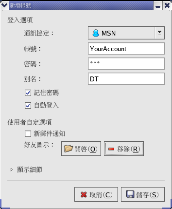
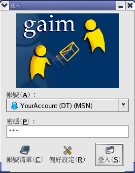
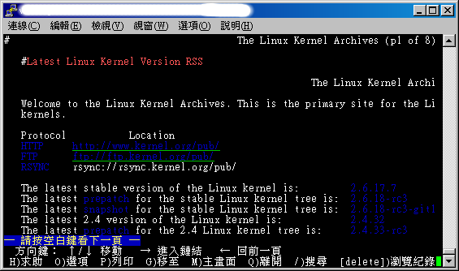
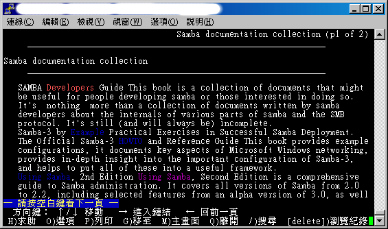
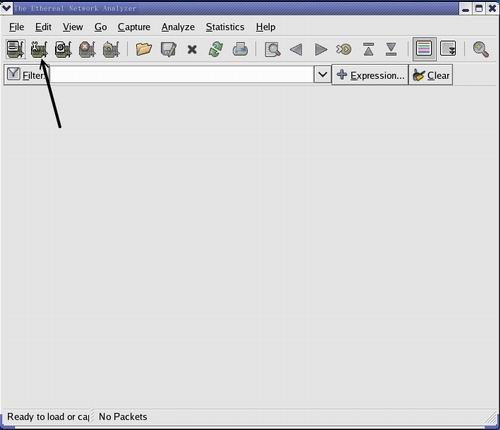
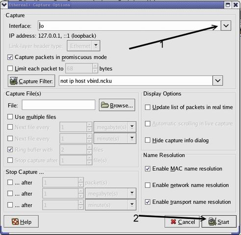
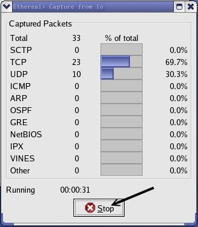
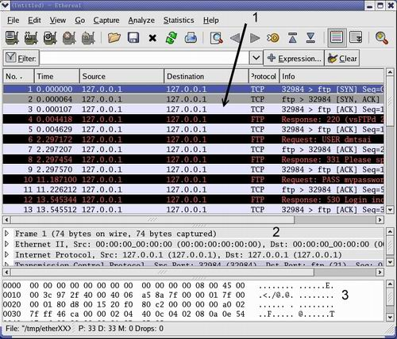

<html><head>
	<meta http-equiv="Content-Type" content="text/html; charset=utf-8">
	<meta name="Author" content="2011/05/24,white">
	<meta name="Description" content="目前我们用在网络方面的命令有哪些呢？如何远程联机控管主机呢？如何以文字界面来浏览呢？">
	<title>鸟哥的 Linux 私房菜 -- Linux 常用网络命令介绍</title>
    <script src="../../script/SpryMenuBar.js" type="text/javascript"></script>
	<script src="../../script/index.js" type="text/javascript"></script>
	<link href="../../css/SpryMenuBarHorizontal.css" rel="stylesheet" type="text/css" />
    <link href="../../css/main.css" rel="stylesheet" type="text/css" />
    </head><body style="margin: 0pt; padding: 0pt;" class="table"onload="MM_preloadImages('../../index-2.html','../../index-2.html','../../index-2.html','../../index-2.html','../../index-2.html','../../index-2.html','../../index-2.html','../../index-2.html')">

<center>
<div id="apDiv5">
<div> <LINK REL="SHORTCUT ICON" HREF="../../index-2.html">
<!-- ImageReady Slices (title3.ai) -->
<table id="___01" width="898" height="81" border="0" align="center" cellpadding="0" cellspacing="0";>
	<tr>
		<td colspan="15">
			</td>
	</tr>
	<tr>
		<td rowspan="4" bgcolor="#182448"><p></p>
	    <p><font color="#FFFFFF" size="-1">since2012/04/23</font></p></td>
		<td rowspan="4" align="left" valign="top"><a href="../../index.html"></a></td>
		<td colspan="13">
			</td>
	</tr>
	<tr>
		<td rowspan="3">
			</td>
		<td colspan="2" align="left" valign="top"><a href="../../linux_basic/0110whatislinux.html" onmouseout="MM_swapImgRestore()" onmouseover="MM_swapImage('Image51','','image/title/title_06.png',1)"></a></td>
		<td rowspan="2">
			</td>
		<td colspan="3" align="left" valign="top"><a href="../0110network_basic.html" onmouseout="MM_swapImgRestore()" onmouseover="MM_swapImage('Image52','','image/title/title_08.png',1)"></a></td>
		<td rowspan="2">
			</td>
		<td colspan="2" align="left" valign="top"><a href="../../about.html" onmouseout="MM_swapImgRestore()" onmouseover="MM_swapImage('Image53','','image/title/title_10.png',1)"></a></td>
		<td rowspan="3">
			</td>
		<td align="left" valign="top"><a href="mailto:vbird@mail.vbird.idv.tw" onmouseout="MM_swapImgRestore()" onmouseover="MM_swapImage('Image54','','image/title/title_12.png',1)"></a></td>
		<td rowspan="3">
			</td>
	</tr>
	<tr>
		<td colspan="2">
			</td>
		<td colspan="3">
			</td>
		<td colspan="2">
			</td>
		<td rowspan="2">
			</td>
	</tr>
	<tr>
		<td>
			</td>
		<td colspan="3" align="left" valign="top"><ul id="MenuBar1" class="MenuBarHorizontal">
	  <li><a href="../../linux_basic/linux_basic.html" onmouseout="MM_swapImgRestore()" onmouseover="MM_swapImage('Image44','','image/title/title_19.png',1)"></a>
			    <ul>
			      <li><a href="../../linux_basic/Mandrake9.0/mandrake9.0.html" onmouseout="MM_swapImgRestore()" onmouseover="MM_swapImage('Image46','','image/title/title_26.png',1)"></a></li>
                  <li><a href="../../linux_basic/fedora_4/fc4.html" onmouseout="MM_swapImgRestore()" onmouseover="MM_swapImage('Image47','','image/title/title_27.png',1)"></a></li>
                  <li><a href="../../linux_basic/linux_basic.html" onmouseout="MM_swapImgRestore()" onmouseover="MM_swapImage('Image48','','image/title/title_28.png',1)"></a></li>
                </ul>
		      </li>
		</ul></td>
		<td>
			</td>
		<td colspan="3" align="left" valign="top"><ul id="MenuBar2" class="MenuBarHorizontal">
	  <li><a href="../index.html" onmouseout="MM_swapImgRestore()" onmouseover="MM_swapImage('Image45','','image/title/title_21.png',1)"></a>
			    <ul>
			      <li><a href="../linux_redhat9/redhat9.html" onmouseout="MM_swapImgRestore()" onmouseover="MM_swapImage('Image43','','image/title/title_26.png',1)"></a></li>
			      <li><a href="../centos4.html" onmouseout="MM_swapImgRestore()" onmouseover="MM_swapImage('Image49','','image/title/title_27.png',1)"></a></li>
			      <li><a href="../index.html" onmouseout="MM_swapImgRestore()" onmouseover="MM_swapImage('Image50','','image/title/title_28.png',1)"></a></li>
		        </ul>
		      </li>
		</ul></td>
		<td>
			</td>
	</tr>
	<tr>
		<td>
			</td>
		<td>
			</td>
		<td>
			</td>
		<td>
			</td>
		<td>
			</td>
		<td>
			</td>
		<td>
			</td>
		<td>
			</td>
		<td>
			</td>
		<td>
			</td>
		<td>
			</td>
		<td>
			</td>
		<td>
			</td>
		<td>
			</td>
		<td>
			</td>
	</tr>
</table>
<!-- End ImageReady Slices -->
<script type="text/javascript">
<!--
var MenuBar1 = new Spry.Widget.MenuBar("MenuBar1", {imgDown:"SpryAssets/SpryMenuBarDownHover.gif", imgRight:"SpryAssets/SpryMenuBarRightHover.gif"});
var MenuBar2 = new Spry.Widget.MenuBar("MenuBar2", {imgDown:"SpryAssets/SpryMenuBarDownHover.gif", imgRight:"SpryAssets/SpryMenuBarRightHover.gif"});
//-->
</script>
</div>
<table summary="本文内容的排版" style="width: 898px;" border="0" cellpadding="0" cellspacing="0">
<tbody><tr><td style="width: 16px; height: 16px;">　</td>
    <td style="width: 866px; height: 16px;">　</td>
    <td style="width: 16px; height: 16px;">　</td></tr>
<tr><td style="width: 16px; font-size: 6px;">　</td>
    <td width="866">

<!-- 本文的档头部分 -->
<div style="text-align:center">
    <a href="http://vbird.dic.ksu.edu.tw/linux_server/0140networkcommand/0140networkcommand-centos4.php">
    <span class="text_head0"><span class="text_head_en">Linux </span>常用网络命令介绍</span></a><br>
</div>
    <div style="text-align:right">
        <span class="text_history">最近升级日期：2006/08/02</span>
    </div>

<center>本文已不再维护，升级文章请参考<a href="http://linux.vbird.org/linux_server/0140networkcommand.php">这里</a><br><br></center>

<!-- 本文的档头部分 -->
<center><table class="head1" summary="排版：文章档头的说明"><tbody><tr><td class="head1">
	Linux 的网络功能相当的强悍，一时之间我们也无法完全的介绍所有的网络命令，
	这个章节主要的目的在介绍一些常见的网络命令而已。至于每个命令的详细用途将在后续服务器架设时，
	依照命令的相关性来进行说明。当然，在这个章节的主要目的是在于将所有的命令汇整在一起，比较容易了解啦！
	还有，这一章鸟哥新增了一些封包撷取的命令，若不熟悉没关系，先放着，全部读完后再回来这一章仔细练习啊！
</td></tr></tbody></table></center><br>

<!-- 本文的连结区部分 -->
<div class="block1">
<span class="text_h1">
1. <a href="#network_setup">网络参数配置命令：</a><br>
	<span class="text_h2">
	　　1.1 <a href="#ifconfig">ifconfig</a>, <a href="#ifup">ifup, ifdown</a><br>
	　　1.2 <a href="#route">route</a><br>
	　　1.3 <a href="#ip_cmd">ip</a><br>
	　　1.4 <a href="#iw_cmd">iwlist, iwconfig</a><br>
	　　1.5 <a href="#dhclient">dhclient</a><br>
	</span>
2. <a href="#network_test">网络侦错与观察命令</a><br>
	<span class="text_h2">
	　　2.1 <a href="#ping">ping</a>：<a href="#ping_mtu">用 ping 追踪最大 MTU 数值</a><br>
	　　2.2 <a href="#traceroute">traceroute</a><br>
	　　2.3 <a href="#netstat">netstat</a><br>
	　　2.4 <a href="#host">host</a><br>
	　　2.5 <a href="#nslookup">nslookup</a><br>
	</span>
3. <a href="#remote_con">远程联机命令</a><br>
	<span class="text_h2">
	　　3.1 <a href="#telnet">telnet</a><br>
	　　3.2 <a href="#ftp">ftp</a><br>
	　　3.3 <a href="#lftp">lftp</a><br>
	　　3.4 <a href="#gaim">gaim：图形接口的实时通讯软件</a><br>
	</span>
4. <a href="#browser">文字接口网页浏览</a><br>
	<span class="text_h2">
	　　4.1 <a href="#lynx">lynx</a><br>
	　　4.2 <a href="#wget">wget</a><br>
	</span>
5. <a href="#pick">封包撷取功能</a><br>
	<span class="text_h2">
	　　5.1 <a href="#tcpdump">tcpdump</a><br>
	　　5.2 <a href="#ethereal">ethereal</a><br>
	　　5.3 <a href="#nc">nc, netcat</a><br>
	</span>
6. <a href="#review">重点回顾</a><br>
7. <a href="#ex">课后练习</a>：<br>
8. <a href="#reference">参考数据</a><br>
<span class="text_h2">
9. <a href="http://phorum.vbird.org/viewtopic.php?t=26123" target="_blank">针对本文的建议：http://phorum.vbird.org/viewtopic.php?t=26123</a><br>
</span>
</span>
</div>


<!-- 本文的正式部分 -->
<hr><a name="network_setup"></a><span class="text_h1">网络参数配置命令：</span><br>
<div class="block1">
	任何时刻如果你想要做好你的网络参数配置，包括 IP 参数、路由参数与无线网络等等，
	就得要了解底下这些相关的命令才行！其中以 route 及 ip  这两支命令算是较重要的喔！ ^_^
	当然，比较早期的用法，我们都是使用 ifconfig 的啦！<br>
	<ul>
	<li><span class="text_import1">ifconfig</span>：查询、配置网络卡与 IP 网域等相关参数；
	</li><li><span class="text_import1">ifup, ifdown</span>：这两个文件是 script ，透过更简单的方式来启动网络接口；
	</li><li><span class="text_import1">route</span>：查询、配置路由表 (route table)
	</li><li><span class="text_import1">ip</span>：复合式的命令，可以直接修改上述提到的功能；</li></ul>

	<hr><a name="network_setup_ip"></a><span class="text_h2">ifconfig, ifup, 
	ifdown</span><br>
	<div class="block2">
		这三个命令的用途都是在启动网络接口，不过， ifup 与 ifdown 仅能就 /etc/sysconfig/network-scripts
		内的 ifcfg-ethx (x 为数字) 进行启动或关闭的动作，并不能直接修改网络参数，除非手动调整 
		ifcfg-ethx 文件才行。至于 ifconfig 则可以直接手动给予某个接口 IP 或调整其网络参数！
		底下我们就分别来谈一谈先！<br><br>

		<hr><li><a name="ifconfig"></a><span class="text_import1">ifconfig</span><br>
		<div class="block2">
			ifconfig 主要是可以手动的启动、观察与修改网络接口的相关参数，可以修改的参数很多啊，
			包括 IP 参数以及 MTU 等等都可以修改，他的语法如下：<br>

<table class="term"><tbody><tr><td class="term"><pre>[root@linux ~]# <span class="term_command">ifconfig {interface} {up|down}</span>  <span class="term_say">&lt;== 观察与启动接口</span>
[root@linux ~]# <span class="term_command">ifconfig interface {options}  </span>  <span class="term_say">&lt;== 配置与修改接口</span>
<span class="term_say">参数：
interface：网络卡接口代号，包括 eth0, eth1, ppp0 等等
options  ：可以接的参数，包括如下：
    up, down ：启动 (up) 或关闭 (down) 该网络接口(不涉及任何参数)
    mtu      ：可以配置不同的 MTU 数值，例如 mtu 1500 (单位为 byte)
    netmask  ：就是子屏蔽网络；
    broadcast：就是广播地址啊！
范例：</span>

<span class="term_hd">范例一：观察所有的网络接口(直接输入 ifconfig)</span>
[root@linux ~]# <span class="term_command">ifconfig</span>
eth0      Link encap:Ethernet  HWaddr 00:0F:EA:A3:06:A2
          inet addr:192.168.10.100  Bcast:192.168.10.255  Mask:255.255.255.0
          inet6 addr: fe80::20f:eaff:fe73:682/64 Scope:Link
          UP BROADCAST RUNNING MULTICAST  MTU:1500  Metric:1
          RX packets:3439 errors:0 dropped:0 overruns:0 frame:0
          TX packets:2735 errors:0 dropped:0 overruns:0 carrier:0
          collisions:0 txqueuelen:1000
          RX bytes:646935 (631.7 KiB)  TX bytes:562313 (549.1 KiB)
          Interrupt:209 Memory:fb000000-0
</pre></td></tr></tbody></table>

			一般来说，<span class="text_import2">直接输入 ifconfig 就会列出目前已经被启动的卡</span>，
			不论这个卡是否有给予 IP ，都会被显示出来。而<span class="text_import2">如果是输入 ifconfig eth0 ，
			则会秀出这张接口的相关数据，而不管该接口是否有启动</span>。所以如果您想要知道某张网络卡的
			Hardware Address，直接输入『 ifconfig "网络接口代号" 』即可喔！ ^_^！
			至于上表出现的各项数据是这样的(数据排列由上而下、由左而右)：<br>
			<ul>
			<li><span class="text_import1">eth0</span>：就是网络卡的代号，也有 lo 这个 loopback ；</li>
			<li><span class="text_import1">HWaddr</span>：就是网络卡的硬件地址，俗称的 MAC 是也；</li>
			<li><span class="text_import1">inet addr</span>：IPv4 的 IP 地址，后续的 Bcast, Mask 分别代表的是
				Broadcast 与 netmask 喔！</li>
			<li><span class="text_import1">inet6 addr</span>：是 IPv6 的版本的 IP ，我们没有使用，所以略过；</li>
			<li><span class="text_import1">MTU</span>：就是 
				<a href="http://vbird.dic.ksu.edu.tw/linux_server/0140networkcommand/0110network_basic.php#protocol_mtu">MTU</a> 啊！</li>
			<li><span class="text_import1">RX</span>：那一行代表的是网络由启动到目前为止的封包接收情况，
				packets 代表封包数、errors 代表封包发生错误的数量、 dropped 
				代表封包由于有问题而遭丢弃的数量等等</li>
			<li><span class="text_import1">TX</span>：与 RX 相反，为网络由启动到目前为止的传送情况；</li>
			<li><span class="text_import1">collisions</span>：代表封包碰撞的情况，如果发生太多次，
				表示您的网络状况不太好；</li>
			<li><span class="text_import1">txqueuelen</span>：代表用来传输数据的缓冲区的储存长度；</li>
			<li><span class="text_import1">RX bytes, TX bytes</span>：总传送、接收的字节总量</li>
			<li><span class="text_import1">Interrupt, Memory</span>：网络卡硬件的数据， IRQ 岔断与内存地址；</li>
			</ul>
			透过观察上述的数据，大致上可以了解到您的网络情况，尤其是那个 RX, TX 内的 error 数量，
			以及是否发生严重的 collision 情况，都是需要注意的喔！ ^_^<br>

<table class="term"><tbody><tr><td class="term"><pre><span class="term_hd">范例二：暂时修改网络接口</span>
[root@linux ~]# <span class="term_command">ifconfig eth0 192.168.100.100</span>
<span class="term_say"># 如果不加任何其他参数，则系统会依照该 IP 所在的 class 范围，
# 自动的计算出 netmask 以及 network, broadcast 等 IP 参数；</span>

[root@linux ~]# <span class="term_command">ifconfig eth0 192.168.100.100 netmask 255.255.255.128 \</span>
&gt; <span class="term_command">mtu 8000 </span>
<span class="term_say"># 配置网络接口，同时配置 MTU 的数值！</span>

[root@linux ~]# <span class="term_command">ifconfig eth0 mtu 9000</span>
<span class="term_say"># 仅修改该接口的 MTU 数值，其他的保持不动！</span>

[root@linux ~]# <span class="term_command">ifconfig eth0:0 192.168.50.50</span>
<span class="term_say"># 仔细看那个界面， eth0:0 喔！那就是在该网络接口上，再仿真一个网络接口，
# 亦即是在一张网络卡上面配置多个 IP 的意思啦！</span>

[root@linux ~]# <span class="term_command">ifconfig</span>
eth0      Link encap:Ethernet  HWaddr 00:0F:EA:A3:06:A2
          inet addr:192.168.10.100  Bcast:192.168.10.255  Mask:255.255.255.0
          UP BROADCAST RUNNING MULTICAST  MTU:1500  Metric:1
          RX packets:3669 errors:0 dropped:0 overruns:0 frame:0
          TX packets:2892 errors:0 dropped:0 overruns:0 carrier:0
          collisions:0 txqueuelen:1000
          RX bytes:667547 (651.9 KiB)  TX bytes:584799 (571.0 KiB)
          Interrupt:209 Memory:fb000000-0

eth0:0    Link encap:Ethernet  HWaddr 00:0F:EA:A3:06:A2
          inet addr:192.168.200.2  Bcast:192.168.200.255  Mask:255.255.255.0
          UP BROADCAST RUNNING MULTICAST  MTU:1500  Metric:1
          Interrupt:209 Memory:fb000000-0
<span class="term_say"># 仔细看，是否与硬件有关的信息都相同啊！没错！因为是同一张网卡嘛！</span>

[root@linux ~]# <span class="term_command">ifconfig eth0:0 down</span>
<span class="term_say"># 关掉 eth0:0 这个界面。如果想要启动 eth1 ，并且不给予任何网络参数，
# ifconfig eth1 up 就可以达到了！</span>

[root@linux ~]# <span class="term_command">/etc/init.d/network restart</span>
<span class="term_say"># 刚刚配置的数据全部失效，会以 ifcfg-ethx 的配置为主！</span>
</pre></td></tr></tbody></table>

			呵呵！使用 ifconfig 可以暂时手动来配置或修改某个适配卡的相关功能，
			并且也可以透过 eth0:0 这种虚拟的网络接口来配置好一张网络卡上面的多个 IP 喔！
			手动的方式真是简单啊！并且配置错误也不打紧，因为我们可以利用 
			<span class="text_import2">/etc/init.d/network restart</span>
			来重新启动整个网络接口，那么之前手动的配置数据会全部都失效喔！另外，
			要启动某个网络接口，但又不让他具有 IP 参数时，直接给他 
			<span class="text_import2">ifconfig eth0 up</span> 即可！
			这个动作<span class="text_import2">经常在无线网卡当中会进行</span>，
			因为我们必须要启动无线网卡让他去侦测 AP 存在与否啊！<br><br>
		</div>

		<hr></li><li><a name="ifup"></a><span class="text_import1">ifup, ifdown</span><br>
		<div class="block2">
			实时的手动修改一些网络接口参数，可以利用 ifconfig 来达成，如果是要直接以配置文件，
			亦即是在 /etc/sysconfig/network-scripts 里面的 ifcfg-ethx 等文件的配置参数来启动的话，
			那就得要透过 ifdown 或 ifup 来达成了。<br>

<table class="term"><tbody><tr><td class="term"><pre>[root@linux ~]# <span class="term_command">ifup   {interface}</span>
[root@linux ~]# <span class="term_command">ifdown {interface}</span>

[root@linux ~]# <span class="term_command">ifup eth0</span>
</pre></td></tr></tbody></table>

			ifup 与 ifdown 真是太简单了！这两支程序其实是 script 而已，他会直接到 
			/etc/sysconfig/network-scripts 目录下搜寻对应的配置文件，例如 
			ifup <span class="text_import1">eth0</span> 时，他会找出 
			ifcfg-<span class="text_import1">eth0</span> 这个文件的内容，然后来加以配置。
			关于 ifcfg-eth0 的配置则请参考前一章<a href="http://vbird.dic.ksu.edu.tw/linux_server/0140networkcommand/0130internet_connect.php">连上 Internet</a>
			的说明。<br><br>

			不过，由于这两支程序主要是搜寻配置文件 (ifcfg-ethx) 来进行启动与关闭的，
			所以在使用前请确定 ifcfg-ethx 是否真的存在于正确的目录内，否则会启动失败喔！
			另外，<span class="text_import2">如果以 ifconfig eth0 .... 来配置或者是修改了网络接口后，
			那就无法再以 ifdown eth0 的方式来关闭了</span>！因为 ifdown 会分析比对目前的网络参数与 ifcfg-eth0
			是否相符，不符的话，就会放弃该次动作。因此，使用 ifconfig 修改完毕后，应该要以 
			ifconfig eth0 down 才能够关闭该界面喔！<br><br>
		</div>
	</li></div>

	<hr><a name="route"></a><span class="text_h2">路由修改 route</span><br>
	<div class="block2">
		我们在<a href="http://vbird.dic.ksu.edu.tw/linux_server/0140networkcommand/0110network_basic.php">网络基础</a>的时候谈过关于路由的问题，
		两部主机之间一定要有路由才能够互通 TCP/IP 的协议，否则就无法进行联机啊！
		一般来说，只要有网络接口，该接口就会产生一个路由，例如在鸟哥实验室内部的主机有一个 eth0 及 lo ，
		所以：<br>

<table class="term"><tbody><tr><td class="term"><pre>[root@linux ~]# <span class="term_command">route [-nee]</span>
[root@linux ~]# <span class="term_command">route add [-net|-host] [网域或主机] netmask [mask] [gw|dev]</span>
[root@linux ~]# <span class="term_command">route del [-net|-host] [网域或主机] netmask [mask] [gw|dev]</span>
<span class="term_say">观察的参数：
   -n  ：不要使用通讯协议或主机名，直接使用 IP 或 port number；
   -ee ：使用更详细的信息来显示
添加 (add) 与删除 (del) 路由的相关参数：
   -net    ：表示后面接的路由为一个网域；
   -host   ：表示后面接的为连接到单部主机的路由；
   netmask ：与网域有关，可以配置 netmask 决定网域的大小；
   gw      ：gateway 的简写，后续接的是 IP 的数值喔，与 dev 不同；
   dev     ：如果只是要指定由那一块网络卡联机出去，则使用这个配置，后面接 eth0 等
</span>
<span class="term_hd">范例一：单纯的观察路由状态</span>
[root@linux ~]# <span class="term_command">route -n</span>
Kernel IP routing table
Destination     Gateway         Genmask         Flags Metric Ref    Use Iface
192.168.10.0    0.0.0.0         255.255.255.0   U     0      0        0 eth0
169.254.0.0     0.0.0.0         255.255.0.0     U     0      0        0 eth0
<span class="term_write">0.0.0.0         192.168.10.30   0.0.0.0</span>         UG    0      0        0 eth0

[root@linux ~]# <span class="term_command">route</span>
Kernel IP routing table
Destination     Gateway         Genmask         Flags Metric Ref    Use Iface
192.168.10.0    *               255.255.255.0   U     0      0        0 eth0
169.254.0.0     *               255.255.0.0     U     0      0        0 eth0
<span class="term_write">default         server.cluster  0.0.0.0</span>         UG    0      0        0 eth0
</pre></td></tr></tbody></table>

		由上面的例子当中仔细观察 route 与 route -n 的输出结果，你可以发现有加 -n 
		参数的主要是显示出 IP ，至于使用 route 而已的话，显示的则是『主机名』喔！
		也就是说，在默认的情况下， route 会去找出该 IP 的主机名，如果找不到呢？
		就会显示的钝钝的(有点小慢)，所以说，鸟哥通常都直接使用 route -n 啦！
		由上面看起来，我们也知道 <span class="text_import2">default = 0.0.0.0/0.0.0.0</span> ，
		而上面的信息有哪些你必须要知道的呢？<br>
		<ul>
		<li><span class="text_import1">Destination, Genmask</span>：这两个玩意儿就是分别是 network 与 
			netmask 啦！所以这两个咚咚就组合成为一个完整的网域啰！</li>
		<li><span class="text_import1">Gateway</span>：该网域是通过那个 gateway 连接出去的？
			如果显示 0.0.0.0 表示该路由是直接由本机传送，亦即可以透过局域网络的 MAC 直接传讯；
			如果有显示 IP 的话，表示该路由需要经过路由器 (通讯闸) 的帮忙才能够传送出去。</li>
		<li><span class="text_import1">Flags</span>：总共有多个旗标，代表的意义如下：
			<ul>
			<li><span class="text_import2">U (route is up)：该路由是启动的；</span>
			</li><li>H (target is a host)：目标是一部主机 (IP) 而非网域；
			</li><li><span class="text_import2">G (use gateway)：需要透过外部的主机 (gateway) 来转递封包；</span>
			</li><li>R (reinstate route for dynamic routing)：使用动态路由时，恢复路由信息的旗标；
			</li><li>D (dynamically installed by daemon or redirect)：已经由服务或转 port 功能配置为动态路由
			</li><li>M (modified from routing daemon or redirect)：路由已经被修改了；
			</li><li>!  (reject route)：这个路由将不会被接受(用来抵挡不安全的网域！)</li></ul></li>
		<li><span class="text_import1">Iface</span>：这个路由传递封包的接口。</li>
		</ul>
		此外，观察一下上面的路由排列顺序喔，<span class="text_import2">依序是由小网域 
		(192.168.10.0/24 是 Class C)，逐渐到大网域
		(169.254.0.0/16 Class B) 最后则是默认路由 (0.0.0.0/0.0.0.0)</span>。
		然后当我们要判断某个网络封包应该如何传送的时候，该封包会经由这个路由的过程来判断喔！
		举例来说，我上头仅有三个路由，若我有一个传往 192.168.10.20 的封包要传递，那首先会找 192.168.10.0/24
		这个网域的路由，找到了！所以直接由 eth0 传送出去；<br><br>

		如果是传送到 Yahoo 的主机呢？ Yahoo 的主机 IP 是 202.43.195.52，我通过判断 1)不是 192.168.10.0/24，
		2)不是 169.254.0.0/16 结果到达 3)0/0 时，OK！传出去了，透过 eth0 将封包传给 192.168.10.30 
		那部 gateway 主机啊！所以说，路由是有顺序的。<br><br>

		因此当你重复配置多个同样的路由时，
		例如在你的主机上的两张网络卡配置为相同网域的 IP 时，会出现什么情况？会出现如下的情况：<br>

<table class="term"><tbody><tr><td class="term"><pre>Kernel IP routing table
Destination     Gateway         Genmask         Flags Metric Ref    Use Iface
192.168.10.0    0.0.0.0         255.255.255.0   U     0      0        0 <span class="term_write">eth0</span>
192.168.10.0    0.0.0.0         255.255.255.0   U     0      0        0 <span class="term_write">eth1</span>
</pre></td></tr></tbody></table>

		也就是说，<span class="text_import2">由于路由是依照顺序来排列与传送的，
		所以不论封包是由那个界面 (eth0, eth1) 所接收，都会由上述的 eth0 传送出去</span>，
		所以，在一部主机上面配置两个相同网域的 IP 本身没有什么意义！有点多此一举就是了。
		除非是类似虛擬機 (Xen, VMware 等软件) 所架设的多主机时，才会有这个必要～<br>

<table class="term"><tbody><tr><td class="term"><pre><span class="term_hd">范例二：路由的添加与删除</span>
[root@linux ~]# <span class="term_command">route del -net 169.254.0.0 netmask 255.255.0.0 dev eth0</span>
<span class="term_say"># 上面这个动作可以删除掉 169.254.0.0/16 这个网域！
# 请注意，在删除的时候，需要将路由表上面出现的信息都写入
# 包括  netmask , dev 等等参数喔！注意注意</span>

[root@linux ~]# <span class="term_command">route add -net 192.168.100.0 \</span>
&gt; <span class="term_command">netmask 255.255.255.0 dev eth0</span>
<span class="term_say"># 透过 route add 来添加一个路由！请注意，这个路由必须要能够与你互通。
# 举例来说，如果我下达底下的命令就会显示错误：
# route add -net 192.168.200.0 netmask 255.255.255.0 gw 192.168.200.254
# 因为我的环境内仅有 192.168.10.100 这个 IP ，所以不能与 192.168.200.254
# 这个网段直接使用 MAC 互通！这样说，可以理解喔！？</span>

[root@linux ~]# <span class="term_command">route add default gw 192.168.10.30</span>
<span class="term_say"># 添加默认路由的方法！请注意，只要有一个默认路由就够了喔！
# 在这个地方如果您随便配置后，记得使用底下的命令重新配置你的网络
# /etc/init.d/network restart</span>
</pre></td></tr></tbody></table>

		如果是要进行路由的删除与添加，那就得要参考上面的例子了，
		其实，使用 man route 里面的数据就很丰富了！仔细查阅一下啰！
		你只要记得，当出现『<span class="text_import2">SIOCADDRT: Network is unreachable</span>』
		这个错误时，肯定是由于 gw 后面接的 IP 无法直接与您的网域沟通 (Gateway 并不在你的网域内)，
		所以，赶紧检查一下是否输入错误啊！加油吧！<br><br>
	</div>

	<hr><a name="ip_cmd"></a><span class="text_h2">ip</span><br>
	<div class="block2">
		ip 是个命令喔！并不是那个 TCP/IP 的 IP 啦！这个 ip 命令的功能可多了！
		基本上，他就是整合了 ifconfig 与 route 这两个命令啰～不过， ip 可以达成的功能却又多更多！
		真是个相当厉害的命令。如果您有兴趣的话，请自行 vi /sbin/ifup ，就知道整个 ifup 
		就是利用 ip 这个命令来达成的。好了，如何使用呢？让我们来瞧一瞧先！<br>

<table class="term"><tbody><tr><td class="term"><pre>[root@linux ~]# <span class="term_command">ip [option] [动作] [命令]</span>
<span class="term_say">参数：
option ：配置的参数，主要有：
    -s ：显示出该装置的统计数据(statistics)，例如总接受封包数等；
动作：亦即是可以针对哪些网络参数进行动作，包括有：
    link  ：关于装置 (device) 的相关配置，包括 MTU, MAC 地址等等
    addr/address ：关于额外的 IP 协议，例如多 IP 的达成等等；
    route ：与路由有关的相关配置</span>
</pre></td></tr></tbody></table>

		由上面的语法我们可以知道， ip 除了可以配置一些基本的网络参数之外，还能够进行额外的 IP 协议，
		包括多 IP 的达成，真是太完美了！底下我们就分三个部分 (link, addr, route) 来介绍这个 ip 
		命令吧！<br><br>

		<hr><li><span class="text_import1">关于装置接口 (device) 的相关配置： ip link</span></li>
		<div class="block2">
		ip link 可以配置与装置 (device) 有关的相关配置，包括 MTU 以及该网络接口的 MAC 等等，
		当然也可以启动 (up) 或关闭 (down) 某个网络接口啦！整个语法是这样的：<br>

<table class="term"><tbody><tr><td class="term"><pre>[root@linux ~]# <span class="term_command">ip [-s] link show</span>  <span class="term_say">&lt;== 单纯的查阅该装置相关的信息</span>
[root@linux ~]# <span class="term_command">ip link set [device] [动作与参数]</span>
<span class="term_say">参数：
show：仅显示出这个装置的相关内容，如果加上 -s 会显示更多统计数据；
set ：可以开始配置项目， device 指的是 eth0, eth1 等等界面代号；
动作与参数：包括有底下的这些动作：
   up|down  ：启动 (up) 或关闭 (down) 某个接口，其他参数使用默认的以太网络；
   address  ：如果这个装置可以更改 MAC 的话，用这个参数修改！
   name     ：给予这个装置一个特殊的名字；
   mtu      ：就是最大传输单元啊！</span>

<span class="term_hd">范例一：显示出所有的接口信息</span>
[root@linux ~]# <span class="term_command">ip link show</span>
1: lo: &lt;LOOPBACK,UP,10000&gt; mtu 16436 qdisc noqueue
    link/loopback 00:00:00:00:00:00 brd 00:00:00:00:00:00
2: eth0: &lt;BROADCAST,MULTICAST,UP,10000&gt; mtu 1500 qdisc pfifo_fast qlen 1000
    link/ether 00:50:fc:22:9a:cb brd ff:ff:ff:ff:ff:ff
3: sit0: &lt;NOARP&gt; mtu 1480 qdisc noop
    link/sit 0.0.0.0 brd 0.0.0.0

[root@linux ~]# <span class="term_command">ip -s link show eth0</span>
2: eth0: &lt;BROADCAST,MULTICAST,UP,10000&gt; mtu 1500 qdisc pfifo_fast qlen 1000
    link/ether 00:50:fc:22:9a:cb brd ff:ff:ff:ff:ff:ff
    RX: bytes  packets  errors  dropped overrun mcast
    484011792  2247372  0       0       0       0
    TX: bytes  packets  errors  dropped carrier collsns
    2914104290 2867753  0       0       0       0
</pre></td></tr></tbody></table>

		使用 ip link show 可以显示出整个装置接口的硬件相关信息，如上所示，包括网卡地址(MAC)、MTU等等，
		比较有趣的应该是那个 sit0 的接口了，那个 sit0 的界面是用在 IPv4 及 IPv6 的封包转换上的，
		对于我们仅使用 IPv4 的网络是没有作用的。 lo 及 sit0 都是主机内部所自行配置的。
		而如果加上 -s 的参数后，则这个网络卡的相关统计信息就会被列出来，
		包括接收 (RX) 及传送 (TX) 的封包数量等等，详细的内容与 ifconfig 所输出的结果相同的。<br>

<table class="term"><tbody><tr><td class="term"><pre><span class="term_hd">范例二：启动、关闭与配置装置的相关信息</span>
[root@linux ~]# <span class="term_command">ip link set eth0 up</span>
<span class="term_say"># 启动 eth0 这个装置接口；</span>

[root@linux ~]# <span class="term_command">ip link set eth0 down</span>
<span class="term_say"># 阿就关闭啊！简单的要命～</span>

[root@linux ~]# <span class="term_command">ip link set eth0 mtu 1000</span>
<span class="term_say"># 更改 MTU 的值，达到 1000 bytes，单位就是 bytes 啊！</span>
</pre></td></tr></tbody></table>

		升级网络卡的 MTU 使用 ifconfig 也可以达成啊！没啥了不起，不过，如果是要更改『网络卡代号、
		MAC 地址的信息』的话，那可就得使用 ip 啰～不过，配置前得要先关闭该网络卡，否则会不成功。
		如下所示：<br>

<table class="term"><tbody><tr><td class="term"><pre><span class="term_hd">范例三：修改网络卡代号、MAC 等参数</span>
[root@linux ~]# <span class="term_command">ip link set eth0 name vbird</span>
SIOCSIFNAME: Device or resource busy
<span class="term_say"># 因为该装置目前是启动的，所以不能这样做配置。你应该要这样做：</span>

[root@linux ~]# <span class="term_command">ip link set eth0 down      </span> <span class="term_say">&lt;==关闭界面</span>
[root@linux ~]# <span class="term_command">ip link set eth0 name vbird</span> <span class="term_say">&lt;==重新配置</span>
[root@linux ~]# <span class="term_command">ip link show               </span> <span class="term_say">&lt;==观察一下</span>
2. <span class="term_write">vbird</span>: &lt;BROADCAST,MILTICASE&gt; mtu 900 qdisc pfifo_fast qlen 1000
    link/ehter 00:40:d0:13:c3:46 brd ff:ff:ff:ff:ff:ff
<span class="term_say"># 怕了吧！连网络卡代号都可以改变！不过，玩玩后记得改回来啊！
# 因为我们的 ifcfg-eth0 还是使用原本的装置代号！避免有问题，要改回来</span>
[root@linux ~]# <span class="term_command">ip link set vbird name eth0</span> <span class="term_say">&lt;==界面改回来</span>

[root@linux ~]# <span class="term_command">ip link set eth0 address aa:aa:aa:aa:aa:aa</span>
[root@linux ~]# <span class="term_command">ip link show eth0</span>
<span class="term_say"># 如果你的网络卡支持硬件地址 (MAC) 可以更改的话，
# 那么上面这个动作就可以更改你的网络卡地址了！厉害吧！
# 不过，还是那句老话，测试完之后请立刻改回来啊！</span>
</pre></td></tr></tbody></table>

		在这个装置的硬件相关信息配置上面，包括 MTU, MAC 以及传输的模式等等，都可以在这里配置。
		有趣的是那个 address 的项目，那个项目后面接的可是硬件地址 (MAC) 而不是 IP 喔！
		很容易搞错啊！切记切记！更多的硬件参数可以使用 man ip 查阅一下与 ip link 有关的配置。<br><br>
		</div>

		<hr><li><span class="text_import1">关于额外的 IP 相关配置： ip address</span></li>
		<div class="block2">
		如果说 ip link 是与 <a href="http://vbird.dic.ksu.edu.tw/linux_server/0140networkcommand/0110network_basic.php#whatisnetwork_osi">OSI 七层协议</a> 
		的第二层数据连阶层有关的话，那么 ip address (ip addr) 就是与第三层网络层有关的参数啦！
		主要是在配置与 IP 有关的各项参数，包括 netmask, broadcast 等等。<br>

<table class="term"><tbody><tr><td class="term"><pre>[root@linux ~]# <span class="term_command">ip address show</span>   <span class="term_say">&lt;==就是查阅 IP 参数啊！</span>
[root@linux ~]# <span class="term_command">ip address [add|del] [IP参数] [dev 装置名] [相关参数]</span>
<span class="term_say">参数：
show    ：单纯的显示出接口的 IP 信息啊；
add|del ：进行相关参数的添加 (add) 或删除 (del) 配置，主要有：
    IP 参数：主要就是网域的配置，例如 192.168.100.100/24 之类的配置喔；
    dev    ：这个 IP 参数所要配置的接口，例如 eth0, eth1 等等；
    相关参数：主要有底下这些：
        broadcast：配置广播地址，如果配置值是 + 表示『让系统自动计算』
        label    ：亦即是这个装置的别名，例如 eth0:0 就是了！
        scope    ：这个界面的领域，通常是这几个大类：
                   global ：允许来自所有来源的联机；
                   site   ：仅支持 IPv6 ，仅允许本主机的联机；
                   link   ：仅允许本装置自我联机；
                   host   ：仅允许本主机内部的联机；
                   所以当然是使用 global 啰！默认也是 global 啦！</span>

<span class="term_hd">范例一：显示出所有的接口之 IP 参数：</span>
[root@linux ~]# <span class="term_command">ip address show</span>
1: lo: &lt;LOOPBACK,UP,10000&gt; mtu 16436 qdisc noqueue
    link/loopback 00:00:00:00:00:00 brd 00:00:00:00:00:00
    inet 127.0.0.1/8 scope host lo
    inet6 ::1/128 scope host
       valid_lft forever preferred_lft forever
2: eth0: &lt;BROADCAST,MULTICAST,UP,10000&gt; mtu 1500 qdisc pfifo_fast qlen 1000
    link/ether 00:50:fc:22:9a:cb brd ff:ff:ff:ff:ff:ff
    <span class="term_write">inet 192.168.1.2/24 brd 192.168.1.255 scope global eth0</span>
    inet6 fe80::250:fcff:fe22:9acb/64 scope link
       valid_lft forever preferred_lft forever
3: sit0: &lt;NOARP&gt; mtu 1480 qdisc noop
    link/sit 0.0.0.0 brd 0.0.0.0
</pre></td></tr></tbody></table>

		看到上面那个特殊的字体吗？没错！那就是 IP 参数啦！也是 ip address 最主要的功能。
		底下我们进一步来新增虚拟的网络介面试看看：<br>

<table class="term"><tbody><tr><td class="term"><pre><span class="term_hd">范例二：新增一个接口，名称假设为 eth0:vbird </span>
[root@linux ~]# <span class="term_command">ip address add 192.168.50.50/24 broadcast + \</span>
&gt; <span class="term_command">dev eth0 label eth0:vbird</span>
[root@linux ~]# <span class="term_command">ip address show eth0</span>
2: eth0: <broadcast,multicast,up> mtu 1500 qdisc pfifo_fast qlen 1000
    link/ether 00:40:d0:13:c3:46 brd ff:ff:ff:ff:ff:ff
    inet 192.168.1.100/24 brd 192.168.1.255 scope global eth0
    <span class="term_write">inet 192.168.50.50/24 brd 192.168.50.255 scope global eth0:vbird</span>
    inet6 fe80::240:d0ff:fe13:c346/64 scope link
       valid_lft forever preferred_lft forever
<span class="term_say"># 看到上面的特殊字体了吧？多出了一行新的接口，且名称是 eth0:vbird
# 至于那个 broadcast + 也可以写成 broadcast 192.168.50.255 啦！</span>
[root@linux ~]# <span class="term_command">ifconfig</span>
<span class="term_write">eth0:vbir</span> Link encap:Ethernet  HWaddr 00:40:D0:13:C3:46
          inet addr:192.168.50.50  Bcast:192.168.50.255  Mask:255.255.255.0
          UP BROADCAST RUNNING MULTICAST  MTU:1500  Metric:1
          Interrupt:5 Base address:0x3e00
<span class="term_say"># 如果使用 ifconfig 就能够看到这个怪东西了！可爱吧！ ^_^</span>

<span class="term_hd">范例三：将刚刚的界面删除 </span>
[root@linux ~]# <span class="term_command">ip address del 192.168.50.50/24 dev eth0</span>
<span class="term_say"># 删除就比较简单啊！ ^_^</span>
</broadcast,multicast,up></pre></td></tr></tbody></table><br>

		</div>
		<hr><li><span class="text_import1">关于路由的相关配置： ip route</span></li>
		<div class="block2">
		呵呵，这个项目当然就是路由的观察与配置啰！事实上， ip route 的功能几乎与 route 
		这个命令差不多，但是，他还可以进行额外的参数设计，例如 MTU 的规划等等，相当的强悍啊！<br>

<table class="term"><tbody><tr><td class="term"><pre>[root@linux ~]# <span class="term_command">ip route show</span>  <span class="term_say">&lt;==单纯的显示出路由的配置而已</span>
[root@linux ~]# <span class="term_command">ip route [add|del] [IP或网域] [via gateway] [dev 装置]</span>
<span class="term_say">参数：
show ：单纯的显示出路由表，也可以使用 list ；
add|del ：添加 (add) 或删除 (del) 路由的意思。
    IP或网域：可使用 192.168.50.0/24 之类的网域或者是单纯的 IP ；
    via     ：从那个 gateway 出去，不一定需要；
    dev     ：由那个装置连出去，这就需要了！
    mtu     ：可以额外的配置 MTU 的数值喔！</span>

<span class="term_hd">范例一：显示出目前的路由数据</span>
[root@linux ~]# <span class="term_command">ip route show</span>
192.168.1.0/24 dev eth0  proto kernel  scope link  src 192.168.1.2
169.254.0.0/16 dev eth1  scope link
default via 192.168.1.254 dev eth1
</pre></td></tr></tbody></table>

		如上表所示，最简单的功能就是显示出目前的路由信息，其实跟 route 这个命令相同啦！
		指示必须要注意几个小东西：<ul>
		<li>proto：此路由的路由协议，主要有 redirect, kernel, boot, static, ra 等，
			其中 kernel 指的是直接由核心判断自动配置。
		</li><li>scope：路由的范围，主要是 link ，亦即是与本装置有关的直接联机。</li></ul>
		再来看一下如何进行路由的添加与删除吧！<br>

<table class="term"><tbody><tr><td class="term"><pre><span class="term_hd">范例二：添加路由，主要是本机直接可沟通的网域</span>
[root@linux ~]# <span class="term_command">ip route add 192.168.5.0/24 dev eth0</span>
<span class="term_say"># 针对本机直接沟通的网域配置好路由，不需要透过外部的路由器</span>
[root@linux ~]# <span class="term_command">ip route show</span>
192.168.5.0/24 dev eth0  scope link
<span class="term_say">....以下省略....</span>

<span class="term_hd">范例三：添加可以通往外部的路由，需透过 router 喔！</span>
[root@linux ~]# <span class="term_command">ip route add 192.168.10.0/24 via 192.168.5.100 dev eth0</span>
[root@linux ~]# <span class="term_command">ip route show</span>
192.168.5.0/24 dev eth0  scope link
<span class="term_say">....其他省略....</span>
192.168.10.0/24 via 192.168.5.100 dev eth0
<span class="term_say"># 仔细看喔，因为我有 192.168.5.0/24 的路由存在 (我的网卡直接联系)，
# 所以才可以将 192.168.10.0/24 的路由丢给 192.168.5.100 
# 那部主机来帮忙传递喔！与之前提到的 route 命令是一样的限制！</span>

<span class="term_hd">范例四：添加默认路由</span>
[root@linux ~]# <span class="term_command">ip route add default via 192.168.1.2 dev eth0</span>
<span class="term_say"># 那个 192.168.1.2 就是我的默认路由器 (gateway) 的意思啊！ ^_^
# 真的记得，只要一个默认路由就 OK ！</span>

<span class="term_hd">范例五：删除路由</span>
[root@linux ~]# <span class="term_command">ip route del 192.168.10.0/24</span>
[root@linux ~]# <span class="term_command">ip route del 192.168.5.0/24</span>
</pre></td></tr></tbody></table><br>
		</div>

		事实上，这个 ip 的命令实在是太博大精深了！刚接触 Linux 网络的朋友，可能会看到有点晕～
		不要紧啦！您先会使用 ifconfig, ifup , ifdown 与 route 即可，
		等以后有经验了之后，再继续回来玩 ip 这个好玩的命令吧！ ^_^
		有兴趣的话，也可以自行参考 ethtool 这个命令喔！ (man ethtool)。<br><br>
	</div>

	<hr><a name="iw_cmd"></a><span class="text_h2">iwlist, iwconfig</span><br>
	<div class="block2">
		这两个命令您必须要有无线网卡才能够进行喔！这两个命令的用途是这样的：<ul>
		<li>iwlist：利用无线网卡进行无线 AP 的侦测与取得相关的数据；
		</li><li>iwconfig：配置无线网卡的相关参数。
		</li></ul>
		这两个命令的应用我们在前一章里面的 <a href="http://vbird.dic.ksu.edu.tw/linux_server/0140networkcommand/0130internet_connect.php#wireless_connect">无线网卡配置</a>
		谈了很多了，所以这里我们不再详谈，有兴趣的朋友应该先使用 man iwlist 与 man iwconfig 了解一下语法，
		然后再到前一章的无线网络小节查一查相关的用法，就了解了啦！ ^_^<br><br>
	</div>

	<hr><a name="dhclient"></a><span class="text_h2">dhclient</span><br>
	<div class="block2">
		如果你是使用 DHCP 协议在局域网络内取得 IP 的话，那么是否一定要去编辑 ifcfg-eth0 内的 BOOTPROTO 呢？
		嘿嘿！有个更快速的作法，那就是利用 dhclient 这个命令～因为这个命令才是真正发送 dhcp
		要求工作的程序啊！那要如何使用呢？很简单！如果不考虑其他的参数，使用底下的方法即可：<br>

<table class="term"><tbody><tr><td class="term"><pre>[root@linux ~]# <span class="term_command">dhclient eth0</span>
</pre></td></tr></tbody></table>

		够简单吧！这样就可以立刻叫我们的网络卡以 dhcp 协议去尝试取得 IP 喔！
		不过在 SuSE distribution 里面，他仅有 dhcpcd 这支程序，他与 dhclient 是相同的咚咚啦！ ^_^<br><br>
	</div>
</div>


<hr><a name="network_test"></a><span class="text_h1">网络侦错与观察命令：</span><br>
<div class="block1">
	在网络的互助论坛中，最常听到的一句话就是：『<span class="text_import2">高手求救！我的
	Linux 不能连上网络了！</span>』我的天吶！不能上网络的原因多的很！而要完全搞懂也不是一件简单的事情呢！
	不过，事实上我们可以自己使用测试软件来追踪可能的错误原因，而很多的网络侦测命令其实在
	Linux 里头已经都默认存在了，只要您好好的学一学基本的侦测命令，那么一些朋友在告诉您如何侦错的时候，
	您应该就立刻可以知道如何来搞定他啰！好了，底下我们就简单的来谈一谈几个很基本的网络常用的侦错命令啦！<br><br>

	<hr><a name="ping"></a><span class="text_h2">ping</span><br>
	<div class="block2">
		这个 ping 是很重要的命令，ping 主要透过 <a href="http://vbird.dic.ksu.edu.tw/linux_server/0140networkcommand/0110network_basic.php#protocol_icmp">ICMP 封包</a>
		来进行整个网络的状况报告，当然啦，最重要的就是那个 ICMP type 0, 8 这两个类型，
		分别是要求回报与主动回报网络状态是否存在的特性。要特别注意的是， ping 还是需要透过 
		<a href="http://vbird.dic.ksu.edu.tw/linux_server/0140networkcommand/0110network_basic.php#ipandmac_head">IP 封包</a>来传送 ICMP 封包的，
		而 IP 封包里面有个相当重要的 TTL (Time To Live) 属性，这是很重要的一个路由特性，
		详细的 IP 与 ICMP 表头数据请参考<a href="http://vbird.dic.ksu.edu.tw/linux_server/0140networkcommand/0110network_basic.php">网络基础</a>的详细介绍。<br>

<table class="term"><tbody><tr><td class="term"><pre>[root@linux ~]# <span class="term_command">ping [-bcstnM] IP</span>
<span class="term_say">参数：
-b ：后面接的是 broadcast 的 IP，用在你『需要对整个网域的主机进行 ping 』时；
-c ：后面接的是运行 ping 的次数，例如 -c 5 ；
-n ：不进行 IP 与主机名的反查，直接使用 IP ；
-s ：发送出去的 ICMP 封包大小，默认为 56(bytes)，再加 8 bytes 的 ICMP 表头数据
-t ：TTL 的数值，默认是 255，每经过一个节点就会少一；
-M [do|dont] ：主要在侦测网络的 MTU 数值大小，两个常见的项目是：
   do  ：代表传送一个 DF (Don't Fragment) 旗标，让封包不能重新拆包与打包；
   dont：代表不要传送 DF 旗标，表示封包可以在其他主机上拆包与打包</span>

<span class="term_hd">范例一：侦测一下 168.95.1.1 这部 DNS 主机是否存在？</span>
[root@linux ~]# <span class="term_command">ping -c 3 168.95.1.1</span>
PING 168.95.1.1 (168.95.1.1) 56(84) bytes of data.
64 bytes from 168.95.1.1: icmp_seq=0 ttl=243 time=9.16 ms
64 bytes from 168.95.1.1: icmp_seq=1 ttl=243 time=8.98 ms
64 bytes from 168.95.1.1: icmp_seq=2 ttl=243 time=8.80 ms

--- 168.95.1.1 ping statistics ---
3 packets transmitted, 3 received, 0% packet loss, time 2002ms
rtt min/avg/max/mdev = 8.807/8.986/9.163/0.164 ms, pipe 2
</pre></td></tr></tbody></table>

		ping 最简单的功能就是传送 ICMP 封包去要求对方主机回应是否存在于网络环境中，
		上面的响应消息当中，几个重要的项目是这样的：<br>
		<ul>
		<li><span class="text_import1">64 bytes</span>：表示这次传送的 ICMP 封包大小为 64 bytes 这么大，这是默认值，
			在某些特殊场合中，例如要搜索整个网络内最大的 MTU 时，可以使用 -s 2000 之类的数值来取代；</li>
		<li><span class="text_import1">icmp_seq=0</span>：ICMP 所侦测进行的次数，第一次编号为 0 ；</li>
		<li><span class="text_import1">ttl=243</span>：TTL 与 IP 封包内的 TTL 是相同的，每经过一个带有 MAC
			的节点 (node) 时，例如 router, bridge 时， TTL 就会减少一，默认的 TTL 为 255 ，
			你可以透过 -t 150 之类的方法来重新配置默认 TTL 数值；</li>
		<li><span class="text_import1">time=9.16 ms</span>：响应时间，单位有 ms(0.001秒)及 us(0.000001秒)，
			一般来说，越小的响应时间，表示两部主机之间的网络联机越良好！</li>
		</ul>
		如果你忘记加上 -c 3 这样的规定侦测次数，那就得要使用 [ctrl]-c 将他结束掉了！<br>

<table class="term"><tbody><tr><td class="term"><pre><span class="term_hd">范例二：针对整个网域进行 ping 的追查</span>
[root@linux ~]# <span class="term_command">ping -c 3 -b 192.168.10.255</span>
WARNING: pinging broadcast address          <span class="term_say">&lt;==会告知危险喔！</span>
PING 192.168.10.255 (192.168.10.255) 56(84) bytes of data.
64 bytes from 192.168.10.100: icmp_seq=1 ttl=64 time=0.177 ms
64 bytes from 192.168.10.20: icmp_seq=1 ttl=64 time=0.179 ms (DUP!)
64 bytes from 192.168.10.10: icmp_seq=1 ttl=64 time=0.302 ms (DUP!)
64 bytes from 192.168.10.40: icmp_seq=1 ttl=64 time=0.304 ms (DUP!)
<span class="term_say"># 当要针对整部主机作 ping 的侦测时，可以利用 -b 这个参数。
# 请特别注意，当使用 ping -b 时，会对整个网域进行侦测喔！没事别乱用。
# 例如上面的范例中，局域网内的 192.168.10.20... 等主机会被侦测到。</span>
</pre></td></tr></tbody></table>

		如果想要了解局域网内有多少部主机存活着，那么使用 ping -b broadcast 就能够知道了！
		而不必一部一部主机来侦测啊！方便～另外也特别注意一下，
		<span class="text_import2">如果您的主机与待侦测主机并不在同一个网域内，
		那么 TTL 默认使用 255 ，如果是同一个网域内，那么 TTL 默认则使用 64 喔</span>！
		看看上面的输出即可了解。<br><br>

		<a name="ping_mtu"></a><span class="text_import1">用 ping 追踪最大 MTU 数值</span><br><br>

		我们由前几章的<a href="http://vbird.dic.ksu.edu.tw/linux_server/0140networkcommand/0110network_basic.php">网络基础</a>里面谈到加大讯框 (frame) 时，
		对于网络效能是有帮助的，因为封包打包的次数会减少，加上如果整个传输的媒体都能够接受这个 frame 
		而不需要重新进行封包的拆解与重组的话，那么效能当然会更好，那个修改 frame 大小的参数就是 
		<a href="http://vbird.dic.ksu.edu.tw/linux_server/0140networkcommand/0110network_basic.php#protocol_mtu">MTU</a> 啦！好了，现在我们知道网络卡的 MTU 
		可以透过 <a href="#ifconfig">ifconfig</a> 或者是 <a href="#ip_cmd">ip</a> 等来达成，
		那么追踪整个网络传输的最大 MTU 时，又该如何查询？呵呵！最简单的方法当然是透过 ping 传送一个大封包，
		并且不许中继的路由器或 switch 将该封包重组，那就能够处理啦！没错！可以这样的：<br>

<table class="term"><tbody><tr><td class="term"><pre><span class="term_hd">范例三：找出最大的 MTU 数值</span>
[root@linux ~]# <span class="term_command">ping -c 2 -s 1000 -M do 192.168.10.10</span>
PING 192.168.10.10 (192.168.10.10) 1000(1028) bytes of data.
1008 bytes from 192.168.10.10: icmp_seq=1 ttl=64 time=0.424 ms
<span class="term_say"># 如果有响应，那就是可以接受这个封包，如果无响应，那就表示这个 MTU 太大了。</span>

[root@linux ~]# <span class="term_command">ping -c 2 -s 8000 -M do 192.168.10.10</span>
PING 192.168.10.10 (192.168.10.10) 8000(8028) bytes of data.
<span class="term_write">ping: local error: Message too long, mtu=1500</span>
<span class="term_say"># 这个错误信息是说，本地端的 MTU 才到 1500 而已，你要侦测 8000 的 MTU
# 根本就是无法达成的！那要如何是好？用前一小节介绍的 ip link 来进行 MTU 配置吧！</span>
</pre></td></tr></tbody></table>

		不过，你需要知道的是，由于
		<a href="http://vbird.dic.ksu.edu.tw/linux_server/0140networkcommand/0110network_basic.php#ipandmac_head">IP 封包表头 (不含 options) 就已经占用了 20 bytes</a> ，再加上 
		ICMP 的表头有 8 bytes ，所以<span class="text_import2">当然你在使用 -s size  
		的时候，那个封包的大小就得要先扣除 (20+8=28) 的大小了。
		因此如果要使用 MTU 为 1500 时，就得要下达『 ping -s 1472 -M do xx.yy.zz.ip 』才行啊</span>！
		另外，由于本地端的网络卡 MTU 也会影响到侦测，所以如果想要侦测整个传输媒体的 MTU 数值，
		那么每个可以调整的主机就得要先使用 ifcofig 或 ip 先将 MTU 调大，然后再去进行侦测，
		否则就会出现像上面提供的案例一样，可能会出现『Message too long, mtu=1500』之类的字样喔！
		至于如果侦测完毕后，想要调整优化的 MTU ，那么请参考前一章节的内容来调整啰！ ^_^<br><br>

		不过这个 MTU 不要随便调整啊！除非真的有问题。通常调整 MTU 的时间是在这个时候：
		<ul><span class="text_import2">
		<li>因为全部的主机群都是在内部的局域网，例如丛集架构 (cluster) 的环境下，
			由于内部的网络节点都是我们可以控制的，因此可以透过修改 MTU 来增进网络效能；
		</li><li>因为操作系统默认的 MTU 与您的网域不符，导致某些网站可以顺利联机，某些网站则无法联机。
			以 Windows 操作系统作为联机分享的主机时，在 Client 端挺容易发生这个问题；
		</li></span></ul>
		如果是要连上 Internet 的主机，注意不要随便调整 MTU ，因为我们无法知道 Internet 
		上面的每部机器能够支持的 MTU 到多大，因为......不是我们能够管的到的嘛！ ^_^<br><br>

		另外，其实每种联机方式都有不同的 MTU 值，常见的各种接口的 MTU 值分别为︰<br><br>

<center>
<table bgcolor="lightyellow" border="1" cellpadding="3" cellspacing="0" width="55%">
<tbody><tr align="center" bgcolor="#182448"><td><font color="#FFFFFF">网络接口</font></td><td><font color="#FFFFFF">MTU</font></td></tr>
<tr align="center"><td>Ethernet</td><td>1500</td></tr>
<tr align="center"><td>PPPoE</td><td>1492</td></tr>
<tr align="center"><td>Dial-up(Modem)</td><td>576</td></tr>
</tbody></table></center><br>

		网络上也有免费帮忙查询 MTU 与传输相关数据的网站，例如底下这个网站：
		<ul><li><a href="http://forums.speedguide.net:8117/" target="_blank">http://forums.speedguide.net:8117/</a></li></ul>
		连接上这个网站之前，请先取消您浏览器上的代理服务器 (Proxy) 的配置，才能显示出正确的信息。
		如果在 Windows 的系统上面想要修改 MTU 值的话，那就得要修改 Windows 的登录文件，
		在 Windows 上面对于 MTU 的侦测与修改的详细作法可以参考微软的官方网站：
		<ul><li><a href="http://www.microsoft.com/taiwan/msclub/member/TIPS/Spring_2001/tip1to3/tip1to3_2.htm" target="_blank">http://www.microsoft.com/taiwan/msclub/member/TIPS/Spring_2001/tip1to3/tip1to3_2.htm</a></li></ul>
	</div>

	<hr><a name="traceroute"></a><span class="text_h2">traceroute</span><br>
	<div class="block2">
		我们前面谈到的命令大多数都是针对主机的网络参数配置所需要的，而 ping 是两部主机之间的回声与否判断，
		那么有没有命令可以追踪两部主机之间通过的各个节点 (node) 通讯状况的好坏呢？
		举例来说，如果我们联机到 yahoo 的速度比平常慢，你觉得是 (1)自己的网络环境有问题？
		(2)还是外部的 Internet 有问题？如果是 (1) 的话，我们当然需要检查自己的网络环境啊，
		看看是否又有谁中毒了？但如果是 Internet 的问题呢？那只有『等等等』啊！
		判断是 (1) 还是 (2) 就得要使用 traceroute 这个命令啦！<br>

<table class="term"><tbody><tr><td class="term"><pre>[root@linux ~]# <span class="term_command">traceroute [-nwig] IP</span>
<span class="term_say">参数：
-n ：可以不必进行主机的名称解析，单纯用 IP ，速度较快！
-w ：若对方主机在几秒钟内没有回声就宣告不治...默认是 5 秒
-i ：用在比较复杂的环境，如果你的网络接口很多很复杂时，才会用到这个参数；
     举例来说，你有两条 ADSL 可以连接到外部，那你的主机会有两个 ppp，
     你可以使用 -i 来选择是 ppp0 还是 ppp1 啦！
-g ：与 -i 的参数相仿，只是 -g 后面接的是 gateway 的 IP 就是了。</span>

<span class="term_hd">范例一：</span>
[root@linux ~]# <span class="term_command">traceroute -n tw.yahoo.com</span>
traceroute to tw.yahoo-ap1.akadns.net (203.84.202.164), 30 hops max, 38 byte packets
 1  61.59.121.1  42.174 ms  41.690 ms  41.058 ms
 2  139.175.172.2  40.962 ms  41.978 ms  40.973 ms
 3  192.72.122.130  40.983 ms  41.930 ms  41.003 ms
 4  139.175.58.210  42.956 ms  41.997 ms  42.337 ms
 5  139.175.58.153  47.591 ms  47.972 ms  48.748 ms
 6  139.175.56.30  48.193 ms  47.970 ms  47.986 ms
 7  139.175.57.94  47.959 ms  47.951 ms  47.985 ms
 8  139.175.56.138  48.363 ms  47.586 ms  47.995 ms
 9  139.175.58.42  49.256 ms  50.668 ms  47.490 ms
10  61.58.33.133  201.882 ms  201.565 ms  200.973 ms
11  61.58.33.50  199.910 ms  199.019 ms  198.961 ms
12  203.84.200.226  202.391 ms  202.567 ms  209.283 ms
</pre></td></tr></tbody></table>

		这个 traceroute 挺有意思的，这个命令会针对欲连接的目的地之所有 router 进行 ICMP 的逾时等待，
		例如上面的例子当中，由鸟哥的主机连接到 Yahoo 时，他会经过 12 个节点，traceroute 会主动的对这
		12 个节点做 ICMP 的回声等待，并侦测回复的时间，每个节点会侦测三次。
		所以像上头显示的结果，发现每个节点其实回复的时间大约在 200 ms 以内，算是还可以的 Internet 环境了。
		而且由上面的信息来看，可以看出在 61.58.33.133 这个节点后的传输延迟较久，至于之前的 
		9 个节点则有不错的表现。透过这种解析，可以让您了解到这条联机是那个环节出了问题喔。<br><br>

		另外，如果在默认的 5 秒钟之内 traceroute 听不到节点的回声，那么屏幕上就会跑出一个『 * 』的符号，
		告知该节点无法有顺利的响应。由于我们的 traceroute 用的是 ICMP 封包，有些防火墙或者主机可能会将 ICMP
		可通过的权力拿掉，因此就会造成等不到回声的状态！另外，有些 gateway 
		本来就不支持 traceroute 的功能，因此也会产生那个『 * 』的状况。所以分析时得要注意一下吶！<br><br>
	</div>

	<hr><a name="netstat"></a><span class="text_h2">netstat</span><br>
	<div class="block2">
		如果你觉得你的某个网络服务明明就启动了，但是就是无法造成联机的话，那么应该怎么办？
		首先你应该要查询一下自己的网络接口所监听的端口 (port) 来看看是否真的有启动，
		因为有时候屏幕上面显示的 [OK] 并不一定是 OK 啊！ ^_^<br>

<table class="term"><tbody><tr><td class="term"><pre>[root@linux ~]# <span class="term_command">netstat -[rn]     </span>  <span class="term_say">&lt;==与路由有关的参数</span>
[root@linux ~]# <span class="term_command">netstat -[antulpc]</span>  <span class="term_say">&lt;==与网络接口有关的参数</span>
<span class="term_say">参数：
与路由 (route) 有关的参数说明：
-r  ：列出路由表(route table)，功能如同 route 这个命令；
-n  ：不使用主机名与服务名称，使用 IP 与 port number ，如同 route -n
与网络接口有关的参数：
-a  ：列出所有的联机状态，包括 tcp/udp/unix socket 等；
-t  ：仅列出 TCP 封包的联机；
-u  ：仅列出 UDP 封包的联机；
-l  ：仅列出有在 Listen (监听) 的服务之网络状态；
-p  ：列出 PID 与 Program 的檔名；
-c  ：可以配置几秒钟后自动升级一次，例如 -c 5 每五秒升级一次网络状态的显示；</span>

<span class="term_hd">范例一：列出目前的路由表状态，且以 IP 及 port number 显示：</span>
[root@linux ~]# <span class="term_command">netstat -rn</span>
Kernel IP routing table
Destination     Gateway         Genmask         Flags   MSS Window  irtt Iface
192.168.10.0    0.0.0.0         255.255.255.0   U         0 0          0 eth0
169.254.0.0     0.0.0.0         255.255.0.0     U         0 0          0 eth0
0.0.0.0         192.168.10.30   0.0.0.0         UG        0 0          0 eth0
<span class="term_say"># 其实这个参数就跟 route -n 一模一样，对吧！这不是 netstat 的主要功能啦！</span>

<span class="term_hd">范例二：列出目前的所有网络联机状态，使用 IP 与 port number</span>
[root@linux ~]# <span class="term_command">netstat -an</span>
Active Internet connections (servers and established)
Proto Recv-Q Send-Q Local Address               Foreign Address             State
tcp        0      0 0.0.0.0:25                  0.0.0.0:*                   LISTEN
tcp        0      0 :::22                       :::*                        LISTEN
tcp        0      0 ::ffff:192.168.10.100:25    ::ffff:192.168.10.200:57509 TIME_WAIT
tcp        0     52 ::ffff:192.168.10.100:22    ::ffff:192.168.10.210:1504  ESTABLISHED
udp        0      0 127.0.0.1:53                0.0.0.0:*
Active UNIX domain sockets (servers and established)
Proto RefCnt Flags       Type       State         I-Node Path
unix  2      [ ACC ]     STREAM     LISTENING     4792   public/cleanup
unix  2      [ ACC ]     STREAM     LISTENING     4799   private/rewrite
<span class="term_say">......(底下省略)......</span>
</pre></td></tr></tbody></table>

		netstat 的输出主要分为两大部分，分别是 TCP/IP 的网络接口部分，以及传统的 Unix socket 部分。
		还记得我们在基础篇里面曾经谈到文件的类型吗？那个 socket 与 FIFO 文件还记得吧？
		那就是在 Unix 接口用来做为程序数据交流的接口了，也就是上头表格内看到的 Active Unix domain sockets
		的内容啰～<br><br>

		通常鸟哥都是建议加上『 -n 』这个参数的，因为可以避过主机名与服务名称的反查，直接以 IP 
		及端口号码 (port number) 来显示，显示的速度上会快很多！至于在输出的信息当中，
		我们先来谈一谈关于网络联机状态的输出部分，他主要是分为底下几个大项：<br>
		<ul>
		<li><span class="text_import1">Proto</span>：该联机的封包协议，主要为 TCP/UDP 等封包；<br>
		</li><li><span class="text_import1">Recv-Q</span>：非由用户程序连接所复制而来的总 bytes 数；<br>
		</li><li><span class="text_import1">Send-Q</span>：由远程主机所传送而来，但不具有 ACK 标志的总 bytes 数，
			意指主动联机 SYN 或其他标志的封包所占的 bytes 数；<br>
		</li><li><span class="text_import1">Local Address</span>：本地端的地址，可以是 IP (-n 参数存在时)，
			也可以是完整的主机名。如上表我们看到的 IP 格式有两种，一种是 IPv4 的标准，
			亦即是四组十进制的数字后面加上冒号『:』后，接着 port number 。一种是 IPv6 ，
			前面的 IP 加上很多冒号『:』的格式。我们可以由这个显示的数据看出这个服务是开放在哪一个接口，
			例如上表当中， port 22 是开放在 0.0.0.0 ，亦即是所有接口都可以连到 port 22 ，
			至于 port 53 则仅开放在本机的 127.0.0.1 这个接口而已，所以是不对外部接口开放的意思。<br>
		</li><li><span class="text_import1">Foreign Address</span>：远程的主机 IP 与 port number <br>
		</li><li><span class="text_import1">stat</span>：状态栏，主要的状态含有：<br>
			<ul><li><span class="text_import2">ESTABLISED</span>：已创建联机的状态；
			</li><li><span class="text_import2">SYN_SENT</span>：发出主动联机 (SYN 标志) 的联机封包；
			</li><li><span class="text_import2">SYN_RECV</span>：接收到一个要求联机的主动联机封包；
			</li><li><span class="text_import2">FIN_WAIT1</span>：该插槽服务(socket)已中断，该联机正在断线当中；
			</li><li><span class="text_import2">FIN_WAIT2</span>：该联机已挂断，但正在等待对方主机响应断线确认的封包；
			</li><li><span class="text_import2">TIME_WAIT</span>：该联机已挂断，但 socket 还在网络上等待结束；
			</li><li><span class="text_import2">LISTEN</span>：通常用在服务的监听 port ！可使用『 -l 』参数查阅。
			</li></ul>
		</li></ul>

		基本上，我们常常谈到的 netstat 的功能，就是在观察网络的联机状态了，而网络联机状态中，
		又以观察『<span class="text_import2">我目前开了多少的 port 在等待客户端的联机</span>』以及
		『<span class="text_import2">目前我的网络联机状态中，有多少联机已创建或产生问题</span>』最常见。
		那你如何了解与观察呢？通常鸟哥是这样处理的：<br>

<table class="term"><tbody><tr><td class="term"><pre><span class="term_hd">范例三：秀出目前已经启动的网络服务</span>
[root@linux ~]# <span class="term_command">netstat -tulnp</span>
Active Internet connections (only servers)
Proto Recv-Q Send-Q Local Address   Foreign Address  State    PID/Program name
tcp        0      0 <span class="term_write">0.0.0.0:25</span>      0.0.0.0:*        LISTEN   2141/master
tcp        0      0 <span class="term_write">:::22</span>           :::*             LISTEN   1924/sshd
tcp        0      0 <span class="term_write">:::25</span>           :::*             LISTEN   2141/master
udp        0      0 <span class="term_write">127.0.0.1:53</span>    0.0.0.0:*                 1911/named
<span class="term_say"># 上面最重要的其实是那个 -l 的参数，因为可以仅列出有在 Listen 的 port</span>
</pre></td></tr></tbody></table>

		你可以在上面的范例当中发现，我的网络联机仅有对外开放 port 25 以及 port 22 而已 (因为针对 0.0.0.0 开放)，
		至于 port 53 则仅针对内部的 127.0.0.1 来开放，所以是不对 Internet 开放这个服务的喔！
		而其中 port 22,25 都是使用 TCP 封包，至于 port 53 则是开放在 UDP 封包的状态！
		再仔细的看，每一行输出的最右边，你可以发现鸟哥的主机 port 22 是由 sshd 这支程序所启动的，
		并且他的 PID 是 1924 ，看到这边，聪明的您应该知道，『<span class="text_import2">那我如何关闭这个 
		port</span> 』吧？使用 kill 或 killall 即可啊！ ^_^<br>

<table class="term"><tbody><tr><td class="term"><pre><span class="term_hd">范例四：观察本机上头所有的网络联机状态</span>
[root@linux ~]# <span class="term_command">netstat -atunp</span>
Active Internet connections (servers and established)
Proto Recv-Q Send-Q Local Address     Foreign Address     State       PID/Program name
tcp        0      0 0.0.0.0:25        0.0.0.0:*           LISTEN      2141/master
tcp        0      0 :::22             :::*                LISTEN      1924/sshd
tcp        0      0 :::25             :::*                LISTEN      2141/master
<span class="term_write">tcp        0     68 192.168.1.100:22  192.168.1.210:1504  ESTABLISHED 30417/sshd:</span>
udp        0      0 127.0.0.1:53      0.0.0.0:*                       1911/named
</pre></td></tr></tbody></table>

		看到上头的特殊字体吧？那代表目前已经创建联机的一条网络联机，他是由远程主机 192.168.1.210
		启动一个大于 1024 的端口向本地端主机 192.168.1.100 的 port 22  进行联机的一条联机，
		你必须要想起来的是：『<span class="text_import2">Client 端是随机取一个大于 1024 以上的 
		port 进行联机</span>』，此外『<span class="text_import2">只有 
		root 可以启动小于 1023 以下的 port</span> 』，那就看的懂上头那条联机啰！如果这条联机你想要砍掉他的话，
		看到最右边的 30417/sshd 了没？ kill 会用吧！ ^_^<br><br>

		至于传统的 Unix socket 的数据，记得使用 man netstat 查阅一下吧！
		这个 Unix socket 通常是用在一些仅在本机上运行的程序所开启的插槽接口文件，
		例如 X Window 不都是在本机上运行而已吗？那何必启动网络的 port 呢？当然可以使用 Unix socket
		啰，另外，例如 Postfix 这一类的网络服务器，由于很多动作都是在本机上头来完成的，
		所以以会占用很多的 Unix socket 喔！<br><br>

<table border="1" cellpadding="5" cellspacing="0" width="90%"><tbody><tr><td>
例题一：请说明服务名称与 port number 的对应在 Linux 当中，是用那个文件来配置对应的？<br><br>
答：<ul>
/etc/services
</ul>
</td></tr></tbody></table><br>

	</div>

	<hr><a name="host"></a><span class="text_h2">host</span><br>
	<div class="block2">
		这个命令可以用来查出某个主机名的 IP 喔！举例来说，我们想要知道 tw.yahoo.com 的 IP 时，
		可以这样做：<br>

<table class="term"><tbody><tr><td class="term"><pre>[root@linux ~]# <span class="term_command">host [-a] hostname [server]</span>
<span class="term_say">参数：
-a ：列出该主机详细的各项主机名配置数据
[server] ：可以使用非为 /etc/resolv.conf 的 DNS 主机来查询。</span>

<span class="term_hd">范例一：列出 tw.yahoo.com 的 IP </span>
[root@linux ~]# <span class="term_command">host tw.yahoo.com</span>
tw.yahoo.com is an alias for tw.yahoo-ap1.akadns.net.
tw.yahoo-ap1.akadns.net has address 202.43.195.52
</pre></td></tr></tbody></table>

		瞧！IP 是 202.43.195.52 啊！很简单就可以查询到 IP 了！
		那么这个 IP 是向谁查询的呢？其实就是写在 <a href="http://vbird.dic.ksu.edu.tw/linux_server/0140networkcommand/0130internet_connect.php#resolv">/etc/resolv.conf</a>
		那个文件内的 DNS 主机啦！如果不想要使用该文件内的主机来查询，也可以这样做：<br>

<table class="term"><tbody><tr><td class="term"><pre>[root@linux ~]# <span class="term_command">host tw.yahoo.com 168.95.1.1</span>
Using domain server:
<span class="term_write">Name: 168.95.1.1
Address: 168.95.1.1#53</span>
Aliases:

tw.yahoo.com is an alias for tw.yahoo-ap1.akadns.net.
tw.yahoo-ap1.akadns.net has address 202.43.195.52
</pre></td></tr></tbody></table>

		会告诉我们所使用来查询的主机是哪一部吶！这样就够清楚了吧？至于更详细的 host 用法，我们会在
		<a href="http://linux.vbird.org/linux_server/0350dns.php">DNS 主机</a> 那个章节再来好好聊一聊吧！<br><br>
	</div>
	<hr><a name="nslookup"></a><span class="text_h2">nslookup</span><br>
	<div class="block2">
		这玩意儿的用途与 host 基本上是一样的，就是用来作为 IP 与主机名对应的检查，
		同样是使用 <a href="http://vbird.dic.ksu.edu.tw/linux_server/0140networkcommand/0130internet_connect.php#resolv">/etc/resolv.conf</a>
		这个文件来作为 DNS 服务器的来源选择。<br>

<table class="term"><tbody><tr><td class="term"><pre>[root@linux ~]# <span class="term_command">nslookup [-query=[type]] [hostname|IP]</span>
<span class="term_say">参数：
-query=type：查询的类型，除了传统的 IP 与主机名对应外，DNS 还有很多信息，
             所以我们可以查询很多不同的信息，包括 mx, cname 等等，
             例如： -query=mx 的查询方法！</span>

<span class="term_hd">范例一：找出 www.google.com.tw 的 IP</span>
[root@linux ~]# <span class="term_command">nslookup www.google.com.tw</span>
Server:         168.95.1.1
Address:        168.95.1.1#53

Non-authoritative answer:
www.google.com.tw       canonical name = www.google.com.
www.google.com  canonical name = www.l.google.com.
<span class="term_write">Name:   www.l.google.com
Address: 64.233.189.104</span>

<span class="term_hd">范例二：找出 168.95.1.1 的主机名</span>
[root@linux ~]# <span class="term_command">nslookup 168.95.1.1</span>
Server:         168.95.1.1
Address:        168.95.1.1#53

1.1.95.168.in-addr.arpa name = dns.hinet.net.
</pre></td></tr></tbody></table>

		如何，看起来与 host 差不多吧！不过，这个 nslookup 还可以由 IP 找出主机名喔！
		例如那个范例二，他的主机名是： dns.hinet.net 哩！目前大家都建议使用 dig 
		这个命令来取代 nslookup ，我们会在 <a href="http://linux.vbird.org/linux_server/0350dns.php">DNS 服务器</a> 那时再来好好谈一谈吧！<br><br>
	</div>
</div>


<hr><a name="remote_con"></a><span class="text_h1">远程联机命令：</span><br>
<div class="block1">
	啥是远程联机呢？其实就是在不同的计算机之间进行登陆的情况啦！
	我们可以透过 telnet, ssh 或者是 ftp 等协议来进行远程主机的登陆，
	底下我们就分别来介绍一下这些基本的命令吧！另外，相关的服务器我们则会在后续进行说明的。<br><br>

	<hr><a name="telnet"></a><span class="text_h2">telnet</span><br>
	<div class="block2">
		telnet 是早期我们在个人计算机上面要链接到服务器主机上工作时，最重要的一个软件了！
		他不但可以直接连接到服务器上头，还可以用来连结 BBS 呢！非常棒！
		不过， telnet 本身的数据在传送的时候是使用明码 (原始的数据，没有加密) ，
		所以数据在 Internet 上面跑的时候，会比较危险一点 (就怕被别人监听啊)。
		更详细的数据我们会在『<a href="http://linux.vbird.org/linux_server/0310telnetssh.php">远程联机服务器</a>』章节内做介绍的。<br>

<table class="term"><tbody><tr><td class="term"><pre>[root@linux ~]# <span class="term_command">telnet [host|IP] [port]</span>

<span class="term_hd">范例一：连结到成大梦之大地这个 BBS 站</span>
[root@linux ~]# <span class="term_command">telnet bbs.dorm.ncku.edu.tw</span>
bbs.ccns.ncku.edu.tw ⊙ 梦之大地 逼逼ㄟ四 ⊙ 140.116.250.3 [DreamBBS Ver.040223]
欢迎光临【 梦之大地 逼逼ㄟ四 】。系统负载：0.16 0.16 0.16 [负载正常]
  ╭─┼────┼─╮        ╭╮          ┌┤梦之大地├─────────┐
  ╭──┬──┬──╮╭───┴┴──┬╮  │                              │
  ╰──┴──┴──╯                │    │ 梦之大地由                   │
  ╭────────╮            ╭─╯    │    【计算机网络爱好社‧CCNS】  │
   ╭───┬───╮       ╭──╯        │                     维护管理 │
           │      │   ╭─╯              │                              │
   ╰───┴───╯ ╰┴───────╯  └─────────┤By BenHe├┘

  ┌┤本站站长群├────────┐          ╭              ╭    ╭    ╮
  │站长: billcho                 │  ╭───┼────╮╭─┼─╭┼──┼╮
  │系统: cat                     │          │              │    │    ││
  │站务: muwell  ianwolf         │        ╭╯╮            │    │    ││
  │      renn999 GG              │      ╭╯  ╰╮          │    │    │╯
  │                              │    ╭╯      ╰╮        │╭  │
  └───────────────┘  ╰╯          ╰─╯╰─┴╯  ╰───╯
参观用账号：guest，申请新账号：new。目前在线人数 [2183/5000] 人。
请输入代号：<span style="background-color:white">           </span>
</pre></td></tr></tbody></table>

		如上所示，我们可以透过 telnet 轻易的连结到 BBS 上面，
		<span class="text_import2">而如果您的主机有开启 telnet 服务的话</span>，
		同样的利用『 telnet IP 』并且输入账号与口令之后，就能够登陆主机了。
		另外，在 Linux 上的 telnet 软件还提供了 Kerberos 的认证方式，有兴趣的话请自行参阅 man telnet 
		的说明。<br><br>

		除了连结到服务器以及连结到 BBS 站之外， telnet 还可以用来连结到某个 port (服务) 上头吶！
		举例来说，我们可以用 telnet 连接到 port 110 ，看看这个 port 是否有正确的启动呢？<br>

<table class="term"><tbody><tr><td class="term"><pre><span class="term_hd">范例二：侦测本机端的 110 这个 port 是否正确启动？</span>
[root@linux ~]# <span class="term_command">telnet localhost 110</span>
Trying 127.0.0.1...
telnet: connect to address 127.0.0.1: Connection refused
<span class="term_say"># 如果出现这样的信息，代表这个 port 没有启动或者是这个联机有问题，
# 因为您看到那个 refused 嘛！</span>

[root@linux ~]# <span class="term_command">telnet localhost 25</span>
Trying 127.0.0.1...
Connected to localhost.
Escape character is '^]'.
220 vbird.vbird.idv.tw ESMTP Postfix
<span class="term_command">ehlo localhost</span>
250-linux.dm.tsai
250-PIPELINING
250-SIZE 10240000
250-VRFY
250-ETRN
250 8BITMIME
<span class="term_command">quit</span>
221 Bye
Connection closed by foreign host.
</pre></td></tr></tbody></table>

		瞧！根据输出的结果，我们就能够知道这个通讯协议 (port number 提供的通讯协议功能) 是否有成功的启动吶！
		而在每个 port 所监听的服务都有其特殊的命令，例如上述的 port 25 就是在本机接口所提供的电子邮件服务，
		那个服务所支持的命令就如同上面使用的数据一样，但是其他的 port 就不见得支持这个『 ehlo 』的命令，
		因为不同的 port 有不同的程序嘛！所以当然支持的命令就不同啰！
		与 mail server 有关的 telnet 用法，我们将在邮件服务器内提到喔！<br><br>
	</div>

	<hr><a name="ftp"></a><span class="text_h2">ftp</span><br>
	<div class="block2">
		常常会听到『FTP』这个咚咚吧！举例来说，如果你想要下载 Linux 的光盘刻录映象文件时，要去哪里下载啊？
		不是说要去义守大学吗？也可以到成大或昆山科大等等的 FTP 网站，嘿嘿！没错～那就是 FTP 提供者啦！
		那我们要如何去下载呢？当然就是透过 ftp 的客户端软件了。在 Linux 底下，我们可以透过 ftp 这个软件，
		也可以透过下一小节会提到的 lftp 说～<br>

<table class="term"><tbody><tr><td class="term"><pre>[root@linux ~]# <span class="term_command">ftp [-p] [host|IP] [port]</span>
<span class="term_say">参数：
-p ：启动被动式模式 (passive, PASV)；</span>

<span class="term_hd">范例一：联机到义守大学去看看</span>
[root@linux ~]# <span class="term_command">ftp ftp.isu.edu.tw</span>
Connected to ftp.isu.edu.tw (140.127.177.17).
220-欢迎光临义守大学文件服务器
220-
220-本站提供以下软件可供下载：
220-*******************************************************************************
220-/pub/BeOS/       BeOS 操作系统
220-/pub/Linux/      Linux 操作系统
<span class="term_say">....(其他省略)....</span>
220-*******************************************************************************
Name (ftp.isu.edu.tw:dmtsai): <span class="term_command">anonymous</span>
230 Login successful.
Remote system type is UNIX.
Using binary mode to transfer files.
ftp&gt; <span style="background-color:white"> </span>
ftp&gt; <span class="term_write">help         </span><span class="term_say">&lt;==提供更多的可用命令，可以常参考！</span>
ftp&gt; <span class="term_write">cd</span> /pub      <span class="term_say">&lt;==变换目录到 /pub 当中</span>
ftp&gt; <span class="term_write">dir</span>          <span class="term_say">&lt;==显示远程主机的目录内容</span>
ftp&gt; <span class="term_write">get</span> file     <span class="term_say">&lt;==下载 file 这个文件</span>
ftp&gt; <span class="term_write">mget</span> file    <span class="term_say">&lt;==下载 file 这个目录或文件</span>
ftp&gt; <span class="term_write">put</span> file     <span class="term_say">&lt;==上传 file 这个文件到服务器上</span>
ftp&gt; <span class="term_write">delete</span> file  <span class="term_say">&lt;==删除主机上的 file 这个文件</span>
ftp&gt; <span class="term_write">mkdir</span> dir    <span class="term_say">&lt;==创建 dir 这个目录</span>
ftp&gt; <span class="term_write">lcd</span> /home    <span class="term_say">&lt;==切换『本地端主机』的工作目录</span>
ftp&gt; <span class="term_write">passive</span>      <span class="term_say">&lt;==启动或关闭 passive 模式</span>
ftp&gt; <span class="term_write">binary</span>       <span class="term_say">&lt;==数据传输模式配置为 binary 格式</span>
</pre></td></tr></tbody></table>

		FTP 其实算是一个很麻烦的协议，因为他使用两个 port 分别进行命令与数据的交流，
		详细的数据我们会在后续的 FTP 服务器内详谈，这里我们先单纯的介绍一下如何使用 ftp 这个软件。
		首先我们当然是需要登陆啰，所以在上头的表格当中我们当然需要填入账号与口令了。
		不过由于义守大学提供匿名登录，而匿名登录者的账号就是『 anonymous 』所以直接填写那个账号即可。
		如果是私人的 FTP 时，才需要提供一组完整的账号与口令啦！<br><br>

		登陆 FTP 主机后，就能够使用 ftp 软件的功能进行上传与下载的动作，
		几个常用的 ftp 内命令如上表，不过，鸟哥建议您可以连到大学的 FTP 网站后，
		使用 help (或问号 ?) 来参考可用的命令，然后尝试下载以测试使用一下这个命令吧！
		这样以后没有浏览器的时候，你也可以到 ftp 下载了呢！不错吧！ ^_^<br><br>

		另外，如果由于某些理由，让你的 FTP 主机的 port 开在非正规的端口时，
		那你就可以利用底下的方式来连接到该部主机喔！<br>

<table class="term"><tbody><tr><td class="term"><pre>[root@linux ~]# <span class="term_command">ftp hostname 318</span>
<span class="term_say"># 假设对方主机的 ftp 服务开启在 318 这个 port 啊！</span>
</pre></td></tr></tbody></table>

	</div>

	<hr><a name="lftp"></a><span class="text_h2">lftp</span><br>
	<div class="block2">
		早期当我们要登陆提供匿名登录的主机时，很多时候都是使用 ncftp 这个软件，
		不过，现在有更棒的选择，那就是 lftp 啦！这个软件甚至可以在 ftp 里面使用类似 bash 的命令功能，
		实在是非常的完美！而整个使用的方法与上面提到的 ftp 又非常类似吶！<br>

<table class="term"><tbody><tr><td class="term"><pre>[root@linux ~]# <span class="term_command">lftp [-p port] [-u user[,pass]] [host|IP]</span>
<span class="term_say">参数：
-p  ：后面可以直接接上远程 FTP 主机提供的 port
-u  ：后面则是接上 账号与口令 ，就能够连接上远程主机了
      如果没有加账号口令， lftp 默认会使用 anonymous 尝试匿名登录</span>

<span class="term_hd">范例一：利用 lftp 登陆义守大学</span>
[root@linux ~]# <span class="term_command">lftp ftp.isu.edu.tw</span>
lftp ftp.isu.edu.tw:~&gt; <span style="background-color:white"> </span>
<span class="term_say"># 瞧！一下子就登陆了！很快乐吧！ ^_^</span>
</pre></td></tr></tbody></table>

		至于登陆 FTP 主机后，一样可以使用『help』来显示出可以运行的命令，
		与 ftp 很类似啦！不过多了书签的功能，而且也非常的类似 bash 那！很不错呦！
		除了这个好用的文字接口的 FTP 软件之外，事实上还有很多图形接口的好用软件呢！
		最常见的就是 gftp 了～不但是图形接口，而且与 cute ftp 简直就是像到不行！非常的容易上手喔！
		CentOS 本身就有提供 gftp 了，你可以拿出原版的光盘来安装，然后进入 X Window 后，
		启动一个 shell ，输入『 gftp 』就能够发现他的好用啦！底下我们在来介绍一下实时通讯吧！<br><br>
	</div>

	<hr><a name="gaim"></a><span class="text_h2">gaim</span><br>
	<div class="block2">
		我想，现在应该大家都知道什么是 MSN, 雅虎实时通以及其他的通讯软件吧？
		那么要连上这些服务器时，该怎么处理哪？很简单，在 X Window 底下使用 gaim 就好了！
		简直简单到不行～ ^_^
		请先进入 X Window 系统，然后开启一个终端机窗口，接着直接输入 gaim (请注意您必须已经安装了 gaim 了)
		然后就会出现如下的窗口啦：<br><br>

		<center>
		<br>
		图一、gaim 使用范例图
		</center><br>

		在输入你的账号与口令，并选择相对应的实时通讯服务器 (如 MSN 或 Yahoo 实时通) ，就可以进入到如下画面：<br><br>

		<center>
		<br>
		图二、gaim 使用范例图
		</center><br>

		若一切都没有问题后，按下『登陆』嘿嘿～您就可以在 Linux 上头使用实时通讯软件啦！方便的很哩！ ^_^<br><br>
	</div>
</div>


<hr><a name="browser"></a><span class="text_h1">文字接口网页浏览</span><br>
<div class="block1">
	什么？文字界面竟然有浏览器！别逗了好不好？呵呵！谁有那个时间在逗您呦！真的啦！有这个东西，
	是在文字界面下上网浏览的好工具！分别是 lynx 及 wget 这两个宝贝蛋，但是，您必需要确定您已经安装了这两个套件才行。
	底下就让我们来聊一聊这两个好用的家伙吧！<br><br>

	<hr><a name="lynx"></a><span class="text_h2">lynx</span><br>
	<div class="block2">
		这个命令可以让我们来浏览网页，但鸟哥认为，这个文件最大的功能是在『
		<span class="text_import2">查阅 Linux 本机上面以 HTML 语法写成的文件数据 (document)</span>』
		怎么说呢？如果你曾经到 Linux 本机底下的 /usr/share/doc 这个目录看过文件数据的话，
		就会常常发现一些网页文件，使用 vi  去查阅时，老是看到一堆 HTML  的语法！有碍阅读啊～
		这时候使用 lynx 就是个好方法啦！可以看的清清楚楚啊！ ^_^<br>

<table class="term"><tbody><tr><td class="term"><pre>[root@linux ~]# <span class="term_command">lynx [options] [website]</span>
<span class="term_say">参数：
options 指的是一些惯用的参数，可以使用 man lynx 查阅，常见的有：
-anonymous ：默认使用匿名登录；
-assume_charset=big5 ：配置默认的语系数据为 big5 ，用在中文网页很方便</span>

<span class="term_hd">范例一：浏览 Linux kernel 网站</span>
[root@linux ~]# <span class="term_command">LANG=zh_TW.big5</span>
[root@linux ~]# <span class="term_command">lynx http://www.kernel.org</span>
</pre></td></tr></tbody></table>

		输入 LANG=zh_TW.big5 是当您想要浏览中文网站时，那么终端机就得要有相对应的显示编码才行，
		否则会有一堆乱码产生啊！当我直接输入 lynx 网站网址后，就会出现如下的图示：<br><br>

		<br>
		图三、lynx 使用范例图
		<br><br>

		在特殊字体的部分是我们可以使用 &lt;tab&gt; 按键来进行『超链接』的按钮啦～而上图最底下一行则显示出一些热键，
		你可以按上述的热键来参考一些常见的命令功能。不过有些地方您还是得要知道才行：<br>

		<ul>
		<li>进入画面之后，由于是文字型态，所以编排可能会有点位移！不过不打紧！不会影响我们看咚咚！
		</li><li>这个时候可以使用『上下键』来让光标在上面的选项当中(如信箱、书签等等的)，按下 Enter 就进入该页面 
		</li><li>可以使用『左右键』来移动『上一页或下一页』
		</li><li>可以藉由修改 /etc/lynx.cfg 来配置显示的字符编码 (台湾地区可以选择 utf-8 编码)
		</li><li>其他的配置可以使用上面的范例当中，最底下那一行的说明喔！
		</li><li>一些常见功能：<ul>
			<li>h：Help, 求助功能. 联机帮助书.
			</li><li>g：Goto URL, 按 g 后输入网页地址(URL) 如:http://www.abc.edu/等
			</li><li>d：download, 下载文件.
			</li><li>q：Quit, 跳离 lynx !
			</li><li>Ctrl+C  ：强迫切断 lynx 的运行.
			</li><li>箭头键:<ul>
				<li>上  ：移动光标至本页中 "上一个可连结点" .
				</li><li>下  ：移动光标至本页中 "下一个可连结点" .
				</li><li>左  ：back. 跳回上一页.
				</li><li>右  ：进入反白光标所链接之网页.
				</li><li>ENTER 同 "右" 键.</li></ul>
			</li></ul>
		</li></ul>
		至于如果是浏览 Linux 本机上面的网页文件，那就可以使用如下的方式：<br>

<table class="term"><tbody><tr><td class="term"><pre>[root@linux ~]# <span class="term_command">cd /usr/share/doc/samba-3.0.10/htmldocs</span>
[root@linux htmldocs]# <span class="term_command">lynx index.html</span>
</pre></td></tr></tbody></table>

		在鸟哥的 CentOS 4.3 当中，有这么一个文件，我就可以利用 lynx 来取出察看吶！
		显示的结果有点像底下这样：<br><br>

		<br>
		图四、lynx 使用范例图
		<br><br>

		当然啦！因为您的环境可能是在 Linux 本机的 tty1~tty6 ，所以无法显示出中文，
		这个时候你就得要配置为：『LANG=en_US』之类的语系配置才行喔！
		而如果你常常需要浏览中文语系的网页，那就可以直接修改配置文件，例如 /etc/lynx.cfg 这个文件内：<br>

<table class="term"><tbody><tr><td class="term"><pre>[root@linux ~]# <span class="term_command">vi /etc/lynx.cfg</span>
CHARACTER_SET:utf-8            <span class="term_say">&lt;==约在 399 行</span>
#ASSUME_CHARSET:iso-8859-1     <span class="term_say">&lt;==约在 414 行</span>
#PREFERRED_LANGUAGE:en         <span class="term_say">&lt;==约在 542 行</span>

<span class="term_say"># 你可以将他改成如下所示：</span>
<span class="term_write">CHARACTER_SET:big5
ASSUME_CHARSET:big5
PREFERRED_LANGUAGE:zh_TW</span>
</pre></td></tr></tbody></table>

		另外，如果某些时刻你必须上网点选某个网站以自动取得升级时，举例来说，早期的自动在线升级主机名系统，
		仅支持网页升级，那你如何进行升级呢？嘿嘿！可以使用 lynx 喔！利用 -dump 这个参数处理先：<br>

<table class="term"><tbody><tr><td class="term"><pre>[root@linux ~]# <span class="term_command">lynx -dump \</span>
&gt; <span class="term_command">http://some.site.name/web.php?name=user&amp;password=pw &gt; testfile</span>
</pre></td></tr></tbody></table>

		上面的网站后面有加个问号 (?) 对吧？后面接的则是利用网页的『 GET 』功能取得的各项变量数据，
		利用这个功能，我们就可以直接点选到该网站上啰！非常的方便吧！而且会将运行的结果输出到 testfile
		文件中，不过如果网站提供的数据是以『 POST 』为主的话，那鸟哥就不知道如何搞定了。
		关于 GET 与 POST 的相关信息我们会在 WWW 服务器当中再次的提及的！别紧张啊！<br><br>
	</div>

	<hr><a name="wget"></a><span class="text_h2">wget</span><br>
	<div class="block2">
		如果说 lynx 是在进行网页的『浏览』，那么 wget 就是在进行『网页数据的取得』。
		举例来说，我们的 Linux 核心是放置在 www.kernel.ort 内，主要同时提供 ftp 与 http 来下载。
		我们知道可以使用 lftp 来下载数据，但如果想要用浏览器来下载呢？
		那就利用 wget 吧！<br>

<table class="term"><tbody><tr><td class="term"><pre>[root@linux ~]# <span class="term_command">wget [option] [网址]</span>
<span class="term_say">参数：
若想要联机的网站有提供账号与口令的保护时，可以利用这两个参数来输入喔！
--http-user=usrname
--http-password=password
--quiet ：不要显示 wget 在抓取数据时候的显示信息
更多的参数请自行参考 man wget 吧！ ^_^</span>

<span class="term_hd">范例一：请下载 2.6.17 版的核心</span>
[root@linux ~]# <span class="term_command">wget  \</span>
&gt; <span class="term_command">http://www.kernel.org/pub/linux/kernel/v2.6/linux-2.6.17.tar.gz</span>
--16:06:10--  http://www.kernel.org/pub/linux/kernel/v2.6/linux-2.6.17.tar.gz
           =&gt; `linux-2.6.17.tar.gz'
Resolving www.kernel.org... 204.152.191.37, 204.152.191.5
Connecting to www.kernel.org|204.152.191.37|:80... connected.
HTTP request sent, awaiting response... 200 OK
Length: 51,700,445 (49M) [application/x-gzip]

 3% [==&gt;                        ] 1,890,568    220.69K/s    ETA 04:12
</pre></td></tr></tbody></table>

		您瞧瞧～很可爱吧！不必透过浏览器，只要知道网址后，立即可以进行文件的下载，
		又快速又方便，还可以透过 proxy 的帮助来下载呢！透过修改 /etc/wgetrc 来配置你的代理服务器：<br>

<table class="term"><tbody><tr><td class="term"><pre>[root@linux ~]# <span class="term_command">vi /etc/wgetrc</span>
#http_proxy = http://proxy.yoyodyne.com:18023/  <span class="term_say">&lt;==找到底下这几行，大约在 78 行后；</span>
#ftp_proxy = http://proxy.yoyodyne.com:18023/
#use_proxy = on

<span class="term_say"># 将他改成类似底下的模样，记得，你必须要有可接受的 proxy 主机才行！</span>
<span class="term_write">http_proxy = http://proxy.ncku.edu.tw:3128/
use_proxy = on</span>
</pre></td></tr></tbody></table>
	</div>
</div>


<hr><a name="pick"></a><span class="text_h1">封包撷取功能</span><br>
<div class="block1">
	很多时候由于我们的网络联机出现问题，使用类似 ping 的软件功能却又无法找出问题点，
	最常见的是因为路由与 IP 转递后所产生的一些困扰 (请参考防火墙与 NAT 主机部分)，
	这个时候要怎么办？最简单的方法就是『<span class="text_import2">分析封包的流向</span>』啰！
	透过分析封包的流向，我们可以了解一条联机应该是如何进行双向的联机的动作，
	也就会清楚的了解到可能发生的问题所在了！底下我们就来谈一谈这个 tcpdump 与图形接口的封包分析软件吧！<br><br>

	<hr><a name="tcpdump"></a><span class="text_h2">tcpdump</span><br>
	<div class="block2">
		说实在的，对于 tcpdump 这个软件来说，你甚至可以说这个软件其实就是个黑客软件，
		因为他不但可以分析封包的流向，连封包的内容也可以进行『监听』，
		如果你使用的传输数据是明码的话，不得了，在 router 上面就可能被人家监听走了！
		很可怕吶！所以，我们也要来了解一下这个软件啊！(注：这个 tcpdump 必须使用 root 的身份运行)<br>

<table class="term"><tbody><tr><td class="term"><pre>[root@linux ~]# <span class="term_command">tcpdump [-nn] [-i 接口] [-w 储存档名] [-c 次数] [-Ae]</span>
                <span class="term_command">        [-qX] [-r 文件] [所欲撷取的数据内容]</span>
<span class="term_say">参数：
-nn：直接以 IP 及 port number 显示，而非主机名与服务名称
-i ：后面接要『监听』的网络接口，例如 eth0, lo, ppp0 等等的界面；
-w ：如果你要将监听所得的封包数据储存下来，用这个参数就对了！后面接档名
-c ：监听的封包数，如果没有这个参数， tcpdump 会持续不断的监听，
     直到使用者输入 [ctrl]-c 为止。
-A ：封包的内容以 ASCII 显示，通常用来捉取 WWW 的网页封包数据。
-e ：使用数据连接层 (OSI 第二层) 的 MAC 封包数据来显示；
-q ：仅列出较为简短的封包信息，每一行的内容比较精简
-X ：可以列出十六进制 (hex) 以及 ASCII 的封包内容，对于监听封包内容很有用
-r ：从后面接的文件将封包数据读出来。那个『文件』是已经存在的文件，
     并且这个『文件』是由 -w 所制作出来的。
所欲撷取的数据内容：我们可以专门针对某些通讯协议或者是 IP 来源进行封包撷取，
     那就可以简化输出的结果，并取得最有用的信息。常见的表示方法有：
     'host foo', 'host 127.0.0.1' ：针对单部主机来进行封包撷取
     'net 192.168' ：针对某个网域来进行封包的撷取；
     'src host 127.0.0.1' 'dst net 192.168'：同时加上来源(src)或目标(dst)限制
     'tcp port 21'：还可以针对通讯协议侦测，如 tcp, udp, arp, ether 等
     还可以利用 and 与 or 来进行封包数据的整合显示呢！</span>

<span class="term_hd">范例一：以 IP 与 port number 捉下 eth0 这个网络卡上的封包，持续 3 秒</span>
[root@linux ~]# <span class="term_command">tcpdump -i eth0 -nn</span>
tcpdump: verbose output suppressed, use -v or -vv for full protocol decode
listening on eth0, link-type EN10MB (Ethernet), capture size 96 bytes
<span class="term_write">01:33:40.41 IP 192.168.1.100.22 &gt; 192.168.1.11.1190: P 116:232(116) ack 1 win 9648</span>
01:33:40.41 IP 192.168.1.100.22 &gt; 192.168.1.11.1190: P 232:364(132) ack 1 win 9648
<span class="term_say">&lt;==按下 [ctrl]-c 之后结束</span>
6680 packets captured              <span class="term_say">&lt;==捉下来的封包数量</span>
14250 packets received by filter   <span class="term_say">&lt;==由过滤所得的总封包数量</span>
7512 packets dropped by kernel     <span class="term_say">&lt;==被核心所丢弃的封包</span>
</pre></td></tr></tbody></table>

		如果你是第一次看 tcpdump 的 man page 时，肯定一个头两个大，因为 tcpdump 
		几乎都是分析封包的表头数据，用户如果没有简易的网络封包基础，要看懂很难吶！
		所以，至少您得要回到<a href="http://vbird.dic.ksu.edu.tw/linux_server/0140networkcommand/0110network_basic.php">网络基础</a>里面去将 TCP
		封包的表头数据理解理解才好啊！ ^_^！至于那个范例一所产生的输出范例中，我们可以约略区分为数个字段，
		我们以范例一当中那个特殊字体行来说明一下：<br>
		<ul><li><span class="text_import2">01:33:40.41</span>：这个是此封包被撷取的时间，『时:分:秒』的单位；
		</li><li><span class="text_import2">IP</span>：透过的通讯协议是 IP ；
		</li><li><span class="text_import2">192.168.1.100.22 &gt;</span> ：传送端是 192.168.1.100 这个 
			IP，而传送的 port number 为 22，您必须要了解的是，那个大于 (&gt;) 的符号指的是封包的传输方向喔！
		</li><li><span class="text_import2">192.168.1.11.1190</span>：接收端的 IP 是 192.168.1.11，
			且该主机开启 port 1190 来接收；
		</li><li><span class="text_import2">P 116:232(116)</span>：这个封包带有 PUSH 的数据传输标志，
			且传输的数据为整体数据的 116~232 byte，所以这个封包带有 116 bytes 的数据量；
		</li><li><span class="text_import2">ack 1 win 9648</span>：ACK与 Window size 的相关数据。</li></ul>
		最简单的说法，就是该封包是由 192.168.1.100 传到 192.168.1.11，透过的 port 是由 22 到 1190 ，
		且带有 116 bytes 的数据量，使用的是 PUSH 的旗标，而不是 SYN 之类的主动联机标志。
		呵呵！不容易看的懂吧！所以说，上头才讲请务必到
		<a href="http://vbird.dic.ksu.edu.tw/linux_server/0140networkcommand/0110network_basic.php#protocol_tcp">TCP 表头数据</a>的部分去瞧一瞧的啊！<br><br>


		再来，一个网络状态很忙的主机上面，你想要取得某部主机对你联机的封包数据而已时，
		使用 tcpdump 配合管线命令与正规表示法也可以，不过，毕竟不好捉取！
		我们可以透过 tcpdump 的表示法功能，就能够轻易的将所需要的数据独立的取出来。
		在上面的范例一当中，我们仅针对 eth0 做监听，所以整个 eth0 接口上面的数据都会被显示到屏幕上，
		不好分析啊！那么我们可以简化吗？例如只取出 port 21 的联机封包，可以这样做：<br>

<table class="term"><tbody><tr><td class="term"><pre>[root@linux ~]# <span class="term_command">tcpdump -i eth0 -nn port 21</span>
tcpdump: verbose output suppressed, use -v or -vv for full protocol decode
listening on eth0, link-type EN10MB (Ethernet), capture size 96 bytes
01:54:37.96 IP 192.168.1.11.1240 &gt; 192.168.1.100.21: . ack 1 win 65535
01:54:37.96 IP 192.168.1.100.21 &gt; 192.168.1.11.1240: P 1:21(20) ack 1 win 5840
01:54:38.12 IP 192.168.1.11.1240 &gt; 192.168.1.100.21: . ack 21 win 65515
01:54:42.79 IP 192.168.1.11.1240 &gt; 192.168.1.100.21: P 1:17(16) ack 21 win 65515
01:54:42.79 IP 192.168.1.100.21 &gt; 192.168.1.11.1240: . ack 17 win 5840
01:54:42.79 IP 192.168.1.100.21 &gt; 192.168.1.11.1240: P 21:55(34) ack 17 win 5840
</pre></td></tr></tbody></table>

		瞧！这样就仅提出 port 21 的信息而已，且仔细看的话，你会发现封包的传递都是双向的，
		client 端发出『要求』而 server 端则予以『响应』，所以，当然是有去有回啊！
		而我们也就可以经过这个封包的流向来了解到封包运行的过程。
		举例来说：<ol><li>我们先在一个终端机窗口输入『 tcpdump -i lo -nn 』 的监听，
		</li><li>再另开一个终端机窗口来对本机 (127.0.0.1) 登陆『ssh localhost』</li></ol>那么输出的结果会是如何？<br>

<table class="term"><tbody><tr><td class="term"><pre>[root@linux ~]# <span class="term_command">tcpdump -i lo -nn</span>
<span class="term_say"> 1 </span>tcpdump: verbose output suppressed, use -v or -vv for full protocol decode
<span class="term_say"> 2 </span>listening on lo, link-type EN10MB (Ethernet), capture size 96 bytes
<span class="term_say"> 3 </span>11:02:54.253777 IP 127.0.0.1.<span class="term_write">32936</span> &gt; 127.0.0.1.22: <span class="term_write">S</span> 933696132:933696132(0) 
   win 32767 &lt;mss 16396,sackOK,timestamp 236681316 0,nop,wscale 2&gt;
<span class="term_say"> 4 </span>11:02:54.253831 IP 127.0.0.1.22 &gt; 127.0.0.1.32936: <span class="term_write">S</span> 920046702:920046702(0) 
   <span class="term_write">ack</span> 933696133 win 32767 &lt;mss 16396,sackOK,timestamp 236681316 236681316,nop,
   wscale 2&gt;
<span class="term_say"> 5 </span>11:02:54.253871 IP 127.0.0.1.32936 &gt; 127.0.0.1.22: . <span class="term_write">ack</span> 1 win 8192 &lt;nop,
   nop,timestamp 236681316 236681316&gt;
<span class="term_say"> 6 </span>11:02:54.272124 IP 127.0.0.1.22 &gt; 127.0.0.1.32936: P 1:23(22) ack 1 win 8192 
   &lt;nop,nop,timestamp 236681334 236681316&gt;
<span class="term_say"> 7 </span>11:02:54.272375 IP 127.0.0.1.32936 &gt; 127.0.0.1.22: . ack 23 win 8192 &lt;nop,
   nop,timestamp 236681334 236681334&gt;
</pre></td></tr></tbody></table>

		上表显示的头两行是 tcpdump 的基本说明，然后：<ul>
		<li>第 3 行显示的是『来自 client 端，带有 SYN 主动联机的封包』，
		</li><li>第 4 行显示的是『来自 server 端，除了响应 client 端之外(ACK)，还带有 SYN 主动联机的标志；
		</li><li>第 5 行则显示 client 端响应 server 确定联机创建 (ACK)
		</li><li>第 6 行以后则开始进入数据传输的步骤。</li></ul>
		从第 3-5 行的流程来看，熟不熟悉啊？没错！那就是
		<a href="http://vbird.dic.ksu.edu.tw/linux_server/0140networkcommand/0110network_basic.php#protocol_tcp_3_handshake">三向交握</a> 的基础流程啦！够有趣吧！
		不过 tcpdump 之所以被称为黑客软件之一可不止上头介绍的功能吶！
		上面介绍的功能可以用来作为我们主机的封包联机与传输的流程分析，
		这将有助于我们了解到封包的运行，同时了解到主机的防火墙配置守则是否有需要修订的地方。<br><br>

		更神奇的使用要来啦！如果我们使用 tcpdump 在 router 上面监听『明码』的传输数据时，
		例如 FTP 传输协议，你觉得会发生什么问题呢？
		我们先在主机端下达『 tcpdump -i lo port 21 -nn -X 』然后再以 ftp 登陆本机，并输入账号与口令，
		结果你就可以发现如下的状况：<br>

<table class="term"><tbody><tr><td class="term"><pre>[root@linux ~]# <span class="term_command">tcpdump -i lo -nn -X 'port 21'</span>
    0x0000:  4500 0048 2a28 4000 4006 1286 7f00 0001  E..H*(@.@.......
    0x0010:  7f00 0001 0015 80ab 8355 2149 835c d825  .........U!I.\.%
    0x0020:  8018 2000 fe3c 0000 0101 080a 0e2e 0b67  .....&lt;.........g
    0x0030:  0e2e 0b61 3232 3020 2876 7346 5450 6420  ...a220.(<span class="term_write">vsFTPd.</span>
    0x0040:  322e 302e 3129 0d0a                      2.0.1)..

    0x0000:  4510 0041 d34b 4000 4006 6959 7f00 0001  E..A.K@.@.iY....
    0x0010:  7f00 0001 80ab 0015 835c d825 8355 215d  .........\.%.U!]
    0x0020:  8018 2000 fe35 0000 0101 080a 0e2e 1b37  .....5.........7
    0x0030:  0e2e 0b67 5553 4552 2064 6d74 7361 690d  ...gUSER.<span class="term_write">dmtsai</span>.
    0x0040:  0a                                       .

    0x0000:  4510 004a d34f 4000 4006 694c 7f00 0001  E..J.O@.@.iL....
    0x0010:  7f00 0001 80ab 0015 835c d832 8355 217f  .........\.2.U!.
    0x0020:  8018 2000 fe3e 0000 0101 080a 0e2e 3227  .....&gt;........2'
    0x0030:  0e2e 1b38 5041 5353 206d 7970 6173 7377  ...8PASS.<span class="term_write">mypassw</span>
    0x0040:  6f72 6469 7379 6f75 0d0a                 <span class="term_write">ordisyou</span>..
</pre></td></tr></tbody></table>

		上面的输出结果已经被简化过了，你必须要自行在你的输出结果当中搜寻相关的字符串才行。
		从上面输出结果的特殊字体中，我们可以发现『<span class="text_import2">该 FTP 软件使用的是 
		vsftpd ，并且使用者输入 dmtsai 这个账号名称，且口令是 mypasswordisyou</span>』
		嘿嘿！你说可不可怕啊！如果使用的是明码的方式来传输你的网络数据？
		所以我们才常常在讲啊，网络是很不安全低！<br><br>

		另外你得了解，为了让网络接口可以让 tcpdump 监听，所以运行 tcpdump 时网络接口会启动在
		『错乱模式 (promiscuous)』，所以你会在 /var/log/messages 里面看到很多的警告信息，
		通知你说你的网络卡被配置成为错乱模式！别担心，那是正常的。
		至于更多的应用，请参考 man tcpdump 啰！<br><br>

<table border="1" cellpadding="5" cellspacing="0" width="90%"><tbody><tr><td>
例题：如何使用 tcpdump 监听 (1)来自 eth0 适配卡且 (2)通讯协议为 port 22 ，(3)目标来源为 192.168.1.100
的封包数据？<br><br>
答：<ul>
tcpdump -i eth0 -nn 'port 22 and src host 192.168.1.100'
</ul>
</td></tr></tbody></table><br>

	</div>

	<hr><a name="ethereal"></a><span class="text_h2">ethereal</span><br>
	<div class="block2">
		除了 tcpdump 这个软件之外，其实你还可以使用 ethereal 这个好用的网络使用分析软件吶！
		ethereal 分为文字接口与图形接口，文字接口的用法与 tcpdump 相当的类似，不过他的命令名称为 tethereal
		就是了。因为用法差不多，所以建议您直接使用 man tethereal 查阅吧！
		在 CentOS 上原本就有 ethereal 了，所以请拿出光盘来安装即可喔！
		需要安装 ethereal 与 ethereal-gnome 才行吶！<br><br>

		启动的方法很简单，你必须要在 X Window 底下，先开启一个终端机，然后直接输入 ethereal 后，
		就会出现如下的画面了：<br><br>

		<center><br>
		图五、ethereal 使用范例图
		</center><br>

		简单的作法，你可以点选如上图显示的那个按钮，会出现挑选监听的接口窗口，如下所示：<br><br>

		<center><br>
		图六、ethereal 使用范例图
		</center><br>

		你应该选择要监听的接口，在这里因为是测试用的，所以鸟哥使用的是 lo 这个内部接口，
		你当然应该要选择你自己的网络接口才是。然后按下 start 后，就会出现开始侦测的画面了：<br><br>

		<center><br>
		图七、ethereal 使用范例图
		</center><br>

		在这个画面当中你可以看到很多类型的封包协议，在等你处理完毕后，就可以按下『stop』结束监听，
		而开始进入如下的封包分析画面。<br><br>

		<center><br>
		图八、ethereal 使用范例图
		</center><br>

		封包分析画面共分为三大区块，如上图所示，第一区块主要显示的是封包的标头数据，
		内容就有点类似 tcpdump 的显示结果，第二区块则是详细的表头数据，
		包括讯框的内容、通讯协议的内容以及 socket pair 等等信息。
		第三区块则是 16 进位与 ASCII 码的显示结果。透过这个 ethereal 您就可以一口气得到所需要的所有封包内容啦！
		而且还是图形接口的，很方便吧！透过在第一区块选择不同的封包，就能够查阅每个封包的数据内容啰！<br><br>
	</div>

	<hr><a name="nc"></a><span class="text_h2">nc, netcat</span><br>
	<div class="block2">
		这个 nc 可以用来作为某些服务的检测，因为他可以连接到某个 port 来进行沟通，
		此外，还可以自行启动一个 port 来倾听其他用户的联机吶！非常的不错用！
		如果在编译的时候给予『GAPING_SECURITY_HOLE』参数的话，嘿嘿！
		这个软件还可以用来取得客户端的 bash 哩！可怕吧！我们的 CentOS 
		比较人性化，并没有给予上面的参数，所以我们不能够用来作为黑客软件～
		但是用来取代 telnet 也是个很棒的功能了！(有的系统将运行文件改名为 netcat 啦！)<br>

<table class="term"><tbody><tr><td class="term"><pre>[root@linux ~]# <span class="term_command">nc [IP|host] [port]</span>
[root@linux ~]# <span class="term_command">nc -l -p [port]</span>
<span class="term_say">参数：
-l ：作为监听之用，亦即开启一个 port 来监听用户的联机；
-p ：开启的这个 port number</span>

<span class="term_hd">范例一：连接本地端的 port 25 查阅相关信息</span>
[root@linux ~]# <span class="term_command">nc localhost 25</span>
localhost.localdomain [127.0.0.1] 25 (smtp) open
220 pc.dm.tsai ESMTP Postfix
<span class="term_command">ehlo localhost</span>
250-pc.dm.tsai
250-PIPELINING
250-SIZE 40000000
250-ETRN
<span class="term_command">quit</span>
221 Bye
</pre></td></tr></tbody></table>

		这个最简单的功能与 telnet 几乎一样吧！可以去检查某个服务啦！不过，更神奇的在后面，
		我们可以创建两个联机来传讯喔！举个例子来说，我们先在 client 端的地方启动一个 port 来进行倾听：<br>

<table class="term"><tbody><tr><td class="term"><pre><span class="term_hd">范例二：激活一个 port 来监听使用者的联机要求</span>
[root@linux ~]# <span class="term_command">nc -l -p 20000</span>
<span class="term_say"># 启动一个 port 20000  在主机上，如果此时使用 netstat -tlnp 
# 就可以看到系统上多出来一个 port 20000 在倾听使用者的联机喔！</span>
</pre></td></tr></tbody></table>

		然后在主机端的地方，也利用 nc 来联机到客户端，并且输入一些命令看看喔！<br>

<table class="term"><tbody><tr><td class="term"><pre>[root@linux ~]# <span class="term_command">nc localhost 20000</span>
<span style="background-color:white"> </span>  <span class="term_say">&lt;==这里可以开始输入字符串了！</span>
</pre></td></tr></tbody></table>

		此时，在主机端我们可以打入一些字，你会发现在 client 端会同时出现你输入的字眼吶！
		如果你同时给予一些额外的参数，例如利用标准输入与输出 (stdout, stdin) 的话，
		那么就可以透过这个联机来作很多事情了！
		当然 nc 的功能不只如此，你还可以发现很多的用途喔！
		请自行到您主机内的 /usr/share/doc/nc-1.10/scripts 目录下看看这些 script ，有帮助的吶！
		不过，如果你需要额外的编译出含有 GAPING_SECURITY_HOLE 功能，
		以使两端联机可以进行额外命令的运行时，就得要自行下载原始码来编译了！<br><br>
	</div>
</div>


<hr><a name="review"></a><span class="text_h1">重点回顾</span><br>
<div class="block1">
<ul><span class="text_import2">
	<li>修改网络接口的硬件相关参数，可以使用 ifconfig  这个命令，包括 MTU 等等；
	</li><li>ifup 与 ifdown 其实只是 script ，在使用时，会主动去 /etc/sysconfig/network-scripts
		下找到相对应的装置配置文件，才能够正确的启动与关闭；
	</li><li>路由的修改与查阅可以使用 route 来查询，此外， route 亦可进行新增、删除路由的工作；
	</li><li>ip 命令可以用来作为整个网络环境的配置，利用 ip link 可以修改『网络装置的硬件相关功能』，
		包括 MTU 与 MAC 等等，可以使用 ip address 修改 TCP/IP 方面的参数，包括 IP 以及网域参数等等，
		ip route 则可以修改路由！
	</li><li>ping 主要是透过 ICMP 封包来进行网络环境的检测工作，并且可以使用 ping 来查询整体网域可接受最大的 MTU 值；
	</li><li>侦察每个节点的联机状况，可以使用 traceroute 这个命令来追踪！
	</li><li>netstat 除了可以观察本机的启动接口外，还可以观察 Unix socket 的传统插槽接口数据；
	</li><li>host 与 nslookup 默认都是透过 /etc/resolv.conf 内配置的 DNS 主机来进行主机名与 IP 的查询；
	</li><li>lftp 可以用来匿名登录远程的 FTP 主机；
	</li><li>telnet 不只用来进行 BBS 的登陆，也可以用来作为某些端口的联机测试；
	</li><li>lynx 主要的功能是『浏览』，包括本机上 HTML 语法的文件， wget 则主要在用来下载 WWW 的数据；
	</li><li>撷取封包以分析封包的流向，可使用 tcpdump ，至于图形接口的 ethereal  则可以进行更为详细的解析。
	</li><li>透过 tcpdump 分析三向交握，以及分析明码传输的数据，可发现网络加密的重要性。
	</li><li>nc 可用来取代 telnet 进行某些服务端口的检测工作，同时若自行编译 nc 时，可额外的运行 -e 参数。
</li></span></ul>
</div>


<hr><a name="ex"></a><span class="text_h1">课后练习</span><br>
<div class="block1">
<ul>
	<li>暂时将你的 eth0 这张网络卡的 IP 配置为 192.168.1.100 ，如何进行？</li>
	<div class="block2"><font color="white" size="-1">
	ifconfig eth0 192.168.1.100
	</font></div>

	<li>我要添加一个路由守则，以 eth0 连接 192.168.100.100/24 这个网域，应该如何下达命令？</li>
	<div class="block2"><font color="white" size="-1">
	route add -net 192.l68.100.0 netmask 255.255.255.0 dev eth0
	</font></div>

	<li>我的网络停顿的很厉害，尤其是连接到 tw.yahoo.com 的时候，那么我应该如何检查那个环节出了问题？</li>
	<div class="block2"><font color="white" size="-1">
	traceroute tw.yahoo.com
	</font></div>

	<li>我发现我的 Linux 主机上面有个联机很怪异，想要将他断线，应该如何进行？</li>
	<div class="block2"><font color="white" size="-1">
	以 root 的身份进行『netstat -anp |more』查出该联机的 PID，然后以『 kill -9 PID 』踢掉该联机。
	</font></div>

	<li>您如何知道 green.ev.ncku.edu.tw 这部主机的 IP ？</li>
	<div class="block2"><font color="white" size="-1">
	方法很多，可以利用 host green.ev.ncku.edu.tw 或 dig green.ev.ncku.edu.tw 或 nslookup green.ev.ncku.edu.tw 等方法找出
	</font></div>

	<li>请找出您的机器上面最适当的 MTU 应该是多少？</li>
	<div class="block2"><font color="white" size="-1">
	请利用『ping -c 3 -M do -s MTU yourIP 』找出您的 IP 的 MTU 数值。
	事实上，你还可以先以 ip 配置网络卡较大的 MTU 后，在进行上述的动作，才能够找出网域内适合的 MTU。
	</font></div>

	<li>如何在终端机接口上面进行 WWW 浏览？又该如何下载 WWW 上面提供的文件？</li>
	<div class="block2"><font color="white" size="-1">
	要浏览可以使用 lynx ，至于要下载则使用 wget 这个软件。
	</font></div>

	<li>在终端机接口中，如何连接 bbs.sayya.org 这个 BBS ？</li>
	<div class="block2"><font color="white" size="-1">
	利用 telnet bbs.sayya.org 即可连接上
	</font></div>

	<li>请自行以 tcpdump 观察本机端的 ssh 联机时，三向交握的内容</li>
	<li>请自行回答：为何使用明码传输的网络联机数据较为危险？并自行以软件将封包取出，并与同学讨论封包的信息</li>
	<li>请自行至 Internet 下载 nc(netcat) 的原始码，并且编译成为具有 GAPING_SECURITY_HOLE 的参数，
	    然后创建一条联机使用 -e /bin/bash 尝试将本地端的 bash 丢给目的端运行 (特殊功能，可让 client 
	    取得来自主机的 bash)。</li>

</ul></div>


<hr><a name="reference"></a><span class="text_h1">参考数据</span><br>
<div class="block1">
<ul>
	<li>查询 MTU 的网站： <a href="http://forums.speedguide.net:8117/" target="_blank">http://forums.speedguide.net:8117/</a></li>
	<li>在 Windows 底下修改 MTU 的方法：
		<a href="http://www.microsoft.com/taiwan/msclub/member/TIPS/Spring_2001/tip1to3/tip1to3_2.htm" target="_blank">http://www.microsoft.com/taiwan/msclub/member/TIPS/Spring_2001/tip1to3/tip1to3_2.htm</a></li>
	<li>本章各命令的 man page 说明文件</li>
</ul>
</div>


<hr><span class="text_history">
2002/07/31：第一次完成日期！<br>
2003/08/19：重新编排版面，加入 <a href="#jmcce">jmcce</a> 的安装以及 <a href="#MTU">MTU</a> 的相关说明<br>
2003/08/20：加入课后练习去<br>
2003/09/19：加入参考用解答咯！<br>
2005/03/24：<a href="#route">route</a> 的命令参数写错了！已经订正！<br>
2006/07/24：将旧的文章移动到 <a href="http://linux.vbird.org/linux_server/0140networkcommand/0140networkcommand/0140networkcommand.php">此处</a><br>
2006/07/24：拿掉相关性不高的 <a href="http://linux.vbird.org/linux_server/0140networkcommand/0140networkcommand/0140networkcommand.php#jmcce">JMCCE 中文终端机</a>；
	将 <a href="http://linux.vbird.org/linux_server/0140networkcommand/0140networkcommand/0140networkcommand.php#MTU">Windows 系统的 MTU 检测修改方法移除</a>。
	也拿掉 <a href="http://linux.vbird.org/linux_server/0140networkcommand/0140networkcommand/0140networkcommand.php#ncftp">ncftp</a> 的说明<br>
2006/08/02：修改了很多部分，加入一些封包侦测的功能程序，tcpdump, nc 等命令！<hr>
</span>
    </td>
    <td style="width: 16px; font-size: 6px;">　</td></tr>
<tr><td style="width: 16px; height: 16px;">　</td>
    <td style="width: 866px; height: 16px;">　</td>
    <td style="width: 16px; height: 16px;">　</td></tr>
</tbody></table>

<div style="padding-top: 0px; text-align: center;">
<span style="font-size: 80%;">
	<a href="http://vbird.dic.ksu.edu.tw/" target="_top" title="前往鸟哥的首页">http://linux.vbird.org</a>
	is designed by <a href="mailto:vbird@mail.vbird.idv.tw" title="联络鸟哥(我不要广告信！)">VBird</a>
		during 2001-2011. <a href="http://www.ksu.edu.tw/" target="_blank">ksu.edu</a></span>
         <div id="apDiv4">
      <p>本网页主要以Firefox配合解析度 1024x768 作为设计依据&nbsp;&nbsp;&nbsp;&nbsp; 鸟哥自由软件整合应用研究室</p></div></div>
</div>
</center>
</body></html>
